2020
- Model 112 was used.
1 The Haldane Relationship
Using the “Parameter Scan” utility in Copasi (Figure 1.1), I collected steady state concentrations of ‘A’ and ‘B’ in \(5^4 = 625\) combinations of \(V_{max(f)}\), \(K_{m(p)}\), \(V_{max(r)}\), and \(K_{m(s)}\), where each parameter vary from \(1\times10^{-2}\) to \(1\times10^{2}\) in a logarithmic scale.

Figure 1.1: “Parameter Scan” setup
Here I read the data, and add two columns, where keq represents the experimental \(K_\text{eq}\):
\(K_\text{eq} = \dfrac{\text{[B]}}{\text{[A]}}\)
and keq_calc represents the \(K_\text{eq}\) calculated from the Haldane relationship:
\(K_\text{eq} = \dfrac{V_{max(f)}\cdot K_{m(p)}}{V_{max(r)}\cdot K_{m(s)}}\)
q1 <- read_tsv('metabolic modelling/q1.txt', col_names = c('vf', 'kmp', 'vr', 'kms', 'A', 'B'))
q1 <- q1 %>% mutate(
keq = B/A,
keq_calc = (vf * kmp) / (vr * kms),
keq_diff = keq - keq_calc
)
q1## # A tibble: 625 x 9
## vf kmp vr kms A B keq keq_calc keq_diff
## <dbl> <dbl> <dbl> <dbl> <dbl> <dbl> <dbl> <dbl> <dbl>
## 1 0.01 0.01 0.01 0.01 1 1 1 1 0.
## 2 0.01 0.01 0.1 0.01 1.82 0.182 0.1 0.1 0.
## 3 0.01 0.01 1 0.01 1.98 0.0198 0.01 0.01 0.
## 4 0.01 0.01 10 0.01 2.00 0.00200 0.001 0.001 0.
## 5 0.01 0.01 100 0.01 2.00 0.000200 0.00010 0.0001 -1.36e-20
## 6 0.1 0.01 0.01 0.01 0.182 1.82 10.0 10 -1.78e-15
## 7 0.1 0.01 0.1 0.01 1 1 1 1 0.
## 8 0.1 0.01 1 0.01 1.82 0.182 0.1 0.1 0.
## 9 0.1 0.01 10 0.01 1.98 0.0198 0.01 0.01 0.
## 10 0.1 0.01 100 0.01 2.00 0.00200 0.001 0.001 0.
## # … with 615 more rowsPlotting keq_calc against keq shows that \(K_\text{eq}\) calculated in these two ways are equal, as the linear regression line has a gradient of 1 and passes through the origin.
q1 %>% ggplot(aes(keq, keq_calc)) +
geom_point() +
geom_smooth()+
scale_x_log10()+
scale_y_log10()
mod <- lm(q1$keq ~ q1$keq_calc)
summary(mod)##
## Call:
## lm(formula = q1$keq ~ q1$keq_calc)
##
## Residuals:
## Min 1Q Median 3Q Max
## -1.148e-08 -4.480e-10 -4.480e-10 -4.190e-10 2.880e-07
##
## Coefficients:
## Estimate Std. Error t value Pr(>|t|)
## (Intercept) 7.078e-10 4.630e-10 1.529e+00 0.127
## q1$keq_calc 1.000e+00 1.135e-16 8.814e+15 <2e-16 ***
## ---
## Signif. codes: 0 '***' 0.001 '**' 0.01 '*' 0.05 '.' 0.1 ' ' 1
##
## Residual standard error: 1.156e-08 on 623 degrees of freedom
## Multiple R-squared: 1, Adjusted R-squared: 1
## F-statistic: 7.769e+31 on 1 and 623 DF, p-value: < 2.2e-16The Haldane relationship shows that \(K_\text{eq}\) is proportional to \(V_{max(f)}\) and \(K_{m(p)}\), and inversely proportional to \(V_{max(r)}\) and \(K_{m(s)}\), and this can be illustrated using a facetted heatmap:
q1 %>% ggplot(aes(x = vf, y = kmp, fill = log10(keq))) +
geom_tile()+
facet_grid((1/vr)~(1/kms), as.table = FALSE, labeller = label_both)+
scale_x_log10(labels = plain, expand = c(0, 0))+
scale_y_log10(labels = plain, expand = c(0, 0))+
scale_fill_gradient2(low = 'blue', mid = 'yellow', high = 'red')+
labs(title = "Variation of Keq with vf, kmp, vr, and kms")+
theme(axis.text.x = element_text(angle = 90))
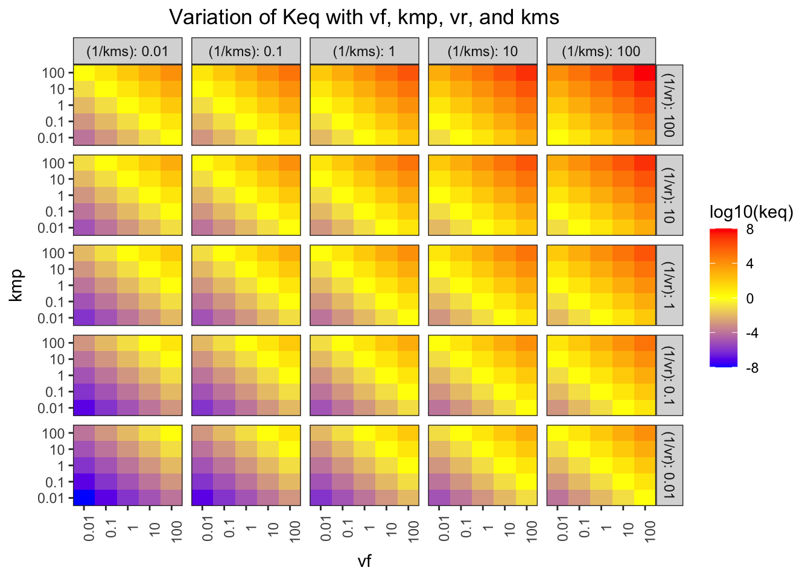
Figure 1.2: Variation of \(K_\text{eq}\) with \(V_{max(f)}\), \(K_{m(p)}\), \(V_{max(r)}\), and \(K_{m(s)}\)
The pattern in each grid shows that \(K_\text{eq}\) is proportional to \(V_{max(f)}\) and \(K_{m(p)}\), and the pattern across the grids shows that it is inversely proportional to \(V_{max(r)}\) and \(K_{m(s)}\).
2 Control Points in A Simple Linear Pathway
I use the “Parameter Scan” function to vary the \(K_\text{eq}\) of reaction 3 (that catalyses the reversible conversion between C and D) in the range \(10^{-6}\) to \(10^6\) in a logarithmic scale (13 samples). The variables being recorded are \(K_\text{eq}\) and \(J\) (flux control coefficient) of reaction 3, and the concentrations of C and D. Then, the reaction quotient, \(Q\) (a.k.a. mass action ratio), of each row is calculated as:
\[Q = \dfrac{\text{[D]}}{\text{[C]}}\]
q2_scan_r3 <- read_tsv('metabolic modelling/Q2.txt')
q2_scan_r3 <- q2_scan_r3 %>% mutate(q = d/c)
q2_scan_r3## # A tibble: 13 x 5
## j keq c d q
## <dbl> <dbl> <dbl> <dbl> <dbl>
## 1 0.0000489 1.00e-6 100. 0.000100 0.00000100
## 2 0.0000489 1.00e-5 100 0.001 0.00001
## 3 0.00470 1.00e-4 99.1 0.00987 0.0000996
## 4 0.0353 1.00e-3 92.2 0.0885 0.000960
## 5 0.119 1.00e-2 69.0 0.556 0.00806
## 6 0.210 1.00e-1 44.5 2.35 0.0528
## 7 0.309 1.00e+0 32.0 6.77 0.212
## 8 0.369 1.00e+1 28.6 10.0 0.350
## 9 0.380 1.00e+2 28.2 10.6 0.378
## 10 0.381 1.00e+3 28.1 10.7 0.381
## 11 0.381 1.00e+4 28.1 10.7 0.381
## 12 0.381 1.00e+5 28.1 10.7 0.381
## 13 0.381 1.00e+6 28.1 10.7 0.381Figure 2.1 shows the variation of the flux control coefficient, \(J\), of reaction 3, with its \(K_\text{eq}\). The plot shows that a high \(K_\text{eq}\), i.e. high irreversibility, is correlated with a high \(J\), and in the intermediate range \(J\) varies linearly with \(\ln(K_\text{eq})\), i.e. varies linearly with \(\Delta G = -RT\ln(K_\text{eq})\)
q2_scan_r3 %>% ggplot(aes(log(keq), j)) +
geom_point()
Figure 2.1: Variation of the flux control coefficient, \(J\), of reaction 3, with its \(K_\text{eq}\)
Figure 2.2 shows the variation of the flux control coefficient, \(J\), of reaction 3 with \(Q/K_\text{eq}\), which is a measure of displacement of the reaction from the equilibrium. A \(Q/K_\text{eq}\) close to 1 indicates the reaction is close to equilibrium. The plot shows that when reaction is further displaced from the equilibrium, the its flux control coefficient is higher.
q2_scan_r3 %>% ggplot(aes(q/keq, j)) +
geom_point()+
geom_smooth(method = 'lm', size = 0.5)
Figure 2.2: Variation of the flux control coefficient, \(J\), of reaction 3, with \(Q/K_\text{eq}\)
A linear regression analysis shows that there is a strong linear correlation between \(J\) and \(Q/K_\text{eq}\), with \(p = 4.02\times10^{-6} < 10^{-5}\)
mod <- with(q2_scan_r3, lm(j ~ q/keq))
summary(mod)##
## Call:
## lm(formula = j ~ q/keq)
##
## Residuals:
## Min 1Q Median 3Q Max
## -0.054438 -0.019991 -0.012931 0.001452 0.108459
##
## Coefficients:
## Estimate Std. Error t value Pr(>|t|)
## (Intercept) 5.448e-02 2.221e-02 2.453 0.0341 *
## q 8.960e-01 9.010e-02 9.945 1.67e-06 ***
## q:keq -4.196e-08 1.569e-07 -0.267 0.7946
## ---
## Signif. codes: 0 '***' 0.001 '**' 0.01 '*' 0.05 '.' 0.1 ' ' 1
##
## Residual standard error: 0.05374 on 10 degrees of freedom
## Multiple R-squared: 0.9167, Adjusted R-squared: 0.9
## F-statistic: 55 on 2 and 10 DF, p-value: 4.02e-06In order to vary \(Q/K_\text{eq}\) without directly varying \(K_\text{eq}\), and to see the effect not only on reaction 3 but also on all other reactions, I vary \(V_f\), not \(K_\text{eq}\), of reaction 3 from \(10^{-6}\) to \(10^6\) with 1000 intervals, and collected the flux control coefficients of all 6 reactions, the \(K_\text{eq}\) of reaction 3, as well as concentrations of all species, which are then used to calculate the mass action ratio of each reaction. Then, the displacement of each reaction is calculated. The resulting dataframe contains three columns: 1) the reaction number; 2) the flux control coefficient and 3) displacement from equilibrium of this reaction
q2_scan_r3_vf <- read_tsv('metabolic modelling/Q2-1.txt')
q2_scan_r3_vf <- q2_scan_r3_vf %>%
mutate(
d1 = (B/A) / 10,
d2 = (C/B) / 1,
d3 = (D/C) / 0.5,
d4 = (E/D) / 5,
d5 = (F/E) / 2,
d6 = (G/F) / 10,
c1 = A + B,
c2 = B + C,
c3 = C + D,
c4 = D + E,
c5 = E + F,
c6 = F + G,
) %>% select(!(1:7))
q2_scan_r3_vf_cleaned <- tibble(
reaction = integer(),
displacement = double(),
j = double()
)
for (i in 1:6) {
q2_scan_r3_vf_cleaned <- add_row(
q2_scan_r3_vf_cleaned,
reaction = i, j = q2_scan_r3_vf[[paste0('j', i)]], displacement = q2_scan_r3_vf[[paste0('d', i)]])
}
q2_scan_r3_vf_cleaned ## # A tibble: 6,006 x 3
## reaction displacement j
## <int> <dbl> <dbl>
## 1 1 1.00 0.0000000343
## 2 1 1.00 0.0000000353
## 3 1 1.00 0.0000000363
## 4 1 1.00 0.0000000373
## 5 1 1.00 0.0000000383
## 6 1 1.00 0.0000000394
## 7 1 1.00 0.0000000405
## 8 1 1.00 0.0000000416
## 9 1 1.00 0.0000000428
## 10 1 1.00 0.0000000440
## # … with 5,996 more rowsThen, for all reactions, \(J\) versus displacement from equilibrium is plotted:
q2_scan_r3_vf_cleaned %>% ggplot(aes(displacement, j)) +
geom_point()+
facet_wrap(~reaction, scales = 'free', labeller = label_both)+
xlab("MAR/Keq")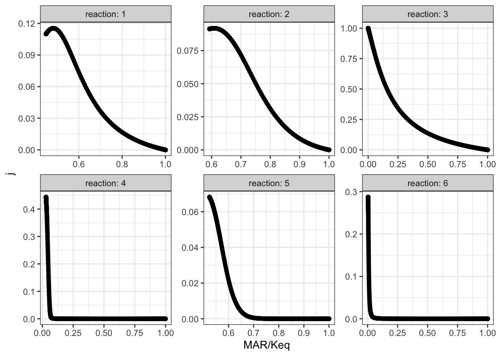
The plots shows that, when disturbing \(V_{max(f)}\) of reaction 3, the disequilibrium ratio of all reactions are also altered. Not only reaction 3 but also all other reactions follow the rule that, the flux control coefficent of a reaction increases with the extent of displacement from the equilibrium. However, it is hard to predict \(J\) given only the value of \(Q/K_\text{eq}\), as different reactions show different patterns of variations, so \(Q/K_\text{eq}\) (displacement from equilibrium) is not a robust indicator of \(J\).
3 Linear Pathway with Negative Feedback
I chose reaction 2 to be the one sensitive to the inhibitor, and varied \(K_i\) from \(10^{-18}\) to \(10^{18}\) with 1000 intervals, and recorded it along with flux control coefficients of all reactions. The results are shown in Figure 3.1.
q3 <- read_tsv('metabolic modelling/Q3.txt')
q3 <- q3 %>% gather(reaction, "j", -ki)
q3 %>% ggplot(aes(ki, j)) +
geom_point()+
facet_wrap(~reaction, labeller = label_both)+
scale_x_log10()
Figure 3.1: Effect of changing \(K_i\) of reaction 2 on the flux control coefficient of all reactions. Lower \(K_i\) means higher binding affinity to the inhibitor.
The plots show that, the flux control coefficient (\(J\)) of reaction 2 increases as the binding affinity (i.e. sensitivity) to the inhibitor of the enzyme involved in this step increases (i.e. as \(K_i\) decreases). \(J\) of the upsteam reaction 1 also inceases slightly. For all downstream reactions, \(J\) decreases.
3.1 Re-analyse the effect of \(K_i\) with constant flux
The flux and values of \(J\) when \(K_\text{i} = 10^{-18}\) and when \(K_\text{i} = 10^18\) are shown below:
ki_low = 1e-18
flux_low = 0.476572
j_low = c(0.203839, 0.717872, 0.0342001, 0.0340061, 0.00278022, 0.007302)
ki_high = 1e18
flux_high = 1.07393
j_high = c(0.110937, 0.0822319, 0.278976, 0.319753, 0.0478304, 0.160271)\(V_f\) of reaction 2 are optimised so that the flux when \(K_\text{i} = 10^{-18}\) is 1.07393 (the same as when \(K_\text{i} = 10^{18}\))
Optimization Result:
Objective Function Value: 1.07393
Function Evaluations: 248
CPU Time [s]: 0.061
Evaluations/Second [1/s]: 4065.57
(R2).Vf: 45.0229
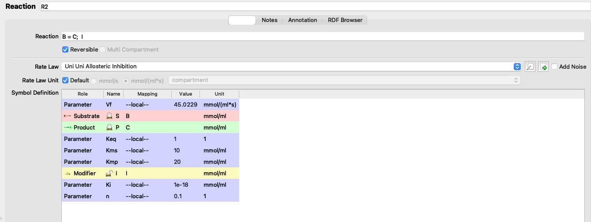
Figure 3.2: Adjusting Vf
I adjusted the \(V_f\) of reaction 2 from 5 to 45.0229 (3.2), verified that the flux is 1.07393 (the same as in the state with negligible inhibition), and the values of \(J\) are:
j_low <- c(0.144048, 0.0858949, 0.266261, 0.30518, 0.0456503, 0.152966)which can be directly compared to the \(J\) values in the uninhibited state:
tibble(
ki =c(rep("low (1e-18)", 6), rep("high (1e18)", 6)),
reaction = rep(as.character(1:6), 2),
j = c(j_low, j_high)
) %>% ggplot(aes(reaction, j, fill = ki)) +
geom_col(position = 'dodge')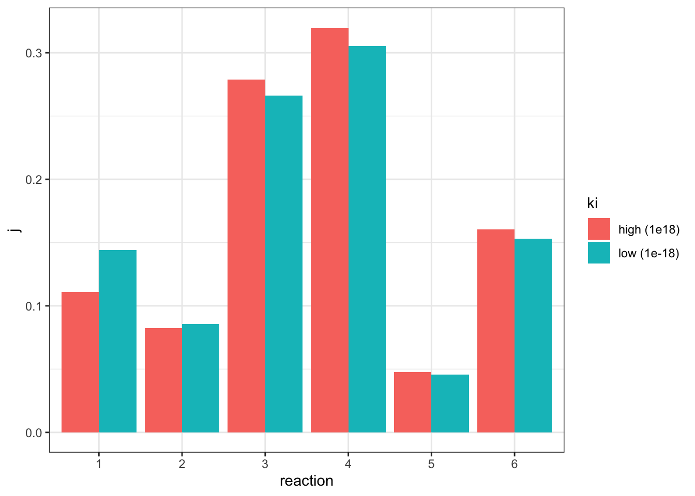
The plot shows that, when the flux is made constant, a lower \(K_i\) (higher affinity of inhibitor binding) increases the flux control coefficent of reaction 2 and the upstream reaction 1, and decreases that of downstream reactions, which is consistent with the previous experiment. However, the amount of change is not as much as previously modelled.
3.1.1 Repeat with Model 212
I repeat the last analysis with model 212, this time choosing reaction 1 as the one to be affected by the inhibitor.
ki_low = 1e-16
j_low = c(0.982287, 0.0109131, 0.00433655, 0.00237021, 6.9396e-05, 2.40539e-05)
flux_low = 0.091902
ki_high = 1e16
flux_high = 0.807846
j_high = c(0.437942, 0.31832, 0.104533, 0.12481, 0.0105218, 0.00387277)Optimization Result:
Objective Function Value: 0.807846
Function Evaluations: 82
CPU Time [s]: 0.018
Evaluations/Second [1/s]: 4555.56
(R1).Vf: 25.7611I adjusted the \(V_f\) of reaction 1 from 5 to 25.7611 (3.2), verified that the flux is 0.807846 (the same as in the state with negligible inhibition), and the values of \(J\) are:
j_low <- c(0.479732, 0.294652, 0.0967611, 0.11553, 0.00973947, 0.00358483)comparing to the \(J\) values in the uninhibited state:
tibble(
ki =c(rep("low (1e-16)", 6), rep("high (1e16)", 6)),
reaction = rep(as.character(1:6), 2),
j = c(j_low, j_high)
) %>% ggplot(aes(reaction, j, fill = ki)) +
geom_col(position = 'dodge')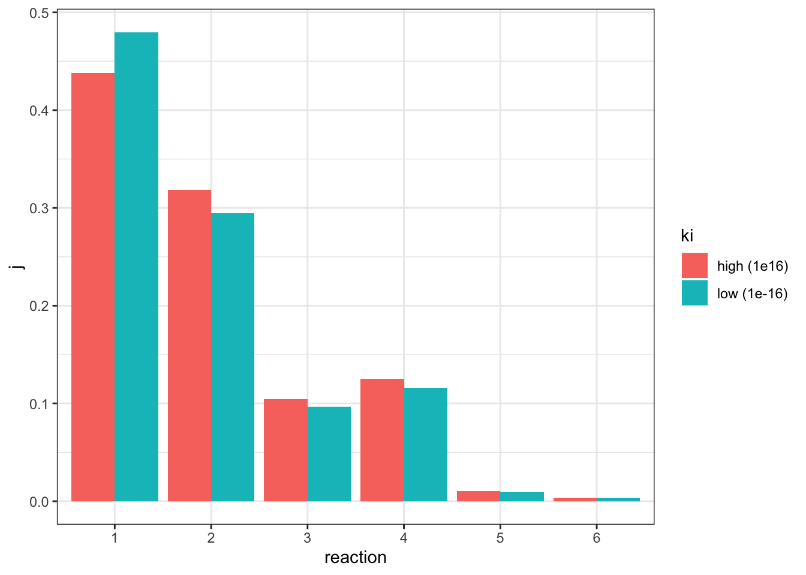
This time only reaction 1 has an increased \(J\), and all other downstream reactions have an lowered \(J\), which is consistent with previous observations.
(a) Assign each lac mutation to one of the strains 1 to 5. Explain your reasoning in each case.
| 1 | 2 | 3 | 4 | 5 | WT | |
|---|---|---|---|---|---|---|
| glycerol | + | − | + | − | − | - |
| glycerol+IPTG | + | − | + | + | − | + |
| glucose+IPTG | − | − | − | + | − | - |
| ×WT hybrid + glycerol | IPTG | IPTG | + | IPTG | IPTG | |
| ×lacY− hybrid | IPTG | × |
- Strain 1: lacI-
- Strain 2: lacZ-
- Strain 3: lacOc
- Strain 4: mutation that causes RNAP to bind more easily
- Strain 5: lacP-
Strains 1 and 3 are both sensitive to catabolite repression (by glucose) but insensitive to induction by IPTG (transcription occurs as long as glucose is not present), which can be either due to lacI- or lacOc. In the diploid with WT, strain 1 becomes sensitive to IPTG, which means strain 1 had a lacI- mutation, and the lacI- of the newly introduced WT allele produces LacI proteins which are effective on both lac operons. Strain 3 has a lacOc mutation, thus this operon is continuously being transcribed regardless of the newly introduced WT allele (LacI is present, but this mutant operon is insensitive to it)
In the last experiment, the introduced plasmid has lacY- mutation and therefore cannot produce \(\beta\)-galactoside permease, this causes strain 5 unable to survive with only lactose. Thus, strain 5 has the lacP- mutation, which originally was able to produce neither permease or galactosidase (because RNAP cannot bind to the promoter to initiate transcription). With plasmid introduced, only galactosidase but not permease is produced, which is not sufficient to catabolise lactose.
Strain 2 contains a lacZ- mutation, which make it unable to produce galactoside but able to produce permease. Thus, \(\beta\)-galactoside catabolism activity is rescued by the introduction of the lacY- pladmid in the last experiment, which allows galactosidase to be produced.
What is a likely explanation for the phenotype displayed by the strain containing the uncharacterized mutation? In which part of the lac region is the uncharacterized mutation likely to be found?
Strain 4 shows insensitivity to catabolite repression (IPTG induces transcription regardless of the presence of glucose). Thus, it may contain a mutation in the promoter region that causes RNA polymerase to bind more easily, without activation by CAP-cAMP.
The mutation in the catabolite repression-insensitive strain used in the practical has been determined to be within the lac operon and is shown below. The sequence alteration involved (substitution of GT in the wild-type sequence with AA) is highlighted by arrows (▼). How could this sequence alteration lead to the observed mutant phenotype?
ApA and ApT steps have smaller base stacking energies than TpT steps, and there are 2 hydrogen bonds between a AT base pair, which is weaker than the 3 hydrogen bonds between a CG base pair. These makes the sequence AAT easier to deform than GTT. Higher deformability makes a the mutant promoter stronger (i.e. higher affinity for RNA polymerase), so RNAP can bind to it regardless of the binding of CAP-cAMP.
1 Determine the time course of \(\beta\)-galactosidase induction
1.1 Protocal
Trial experiment:
- Take OD600 reading in spectrophotometer 1) to verify that the absorbance is around 0.6 (i.e. the cultures are in exponential growth) 2) to estimate the density of E. coli. in solution
- Add 9.940 ml (9.9 ml + \((20 \times 2)\) \(\mu\)l) of stock E. coli solution into each of two flasks labelled
+IPTGand-IPTG(control), respectively - at 1 min intervals take 20 \(\mu\)l sample and add to a microtube containing 80 \(\mu\)l permeabilisation reagent (200 mM Na2HPO4, 20 mM KCl, 2 mM MgSO4, 0.8 mg/mL hexadecyltrimethylammonium bromide (CTAB), 0.4 mg/mL sodium deoxycholate and chloramphenicol. Whirlimix for 5 seconds. (add permeabilisation reagent as soon as a sample is taken out, which contains antibiotics to stop the bacteria from producing more galactosidase (otherwise the bacteria taken out will just continue to produce galactosidase at the same rate); do not add ONPG until all samples are collected, so assays start at the same time)
- collect 2 samples, at -2 min and 0 min (for both
+IPTGand-IPTG) which represent baseline activity and then:- To the remaining 9.9 ml of E. coli. in
+IPTGflask, add 0.1 ml of IPTG (stock solution provided at 100 mM) so that the final concentration is 1 mM. This will induce the lac operon by acting as an allolactose mimic. Mix. - To the remaining 9.9 ml of E. coli. in
-IPTGflask, add 0.1 ml of salt solution
- To the remaining 9.9 ml of E. coli. in
- Collect 10 additional samples (for each of
+IPTGand-IPTG), and setup a blank: 20 \(\mu\)l of salt solution plus 80 \(\mu\)l permeabilisation reagent. (i.e. measuring 40 samples against one blank). - Add 75 \(\mu\)l of ONPG to 75 \(\mu\)l of each sample and the blank. Incubate at 37oC and start the timer.
- Monitor the reaction until a convenient intensity of colour has developed. Take samples out and note the time of incubation.
- Read absorption at 415 nm against the blank. The readings should not exceed 1.2 to ensure linearity, so it’s important to stop the reaction before the colour gets too dark (in the previous step).
- If any of the readings gets beyond 1.2, incubate for less time in the next experiment
- Plot a graph of A415 against time. Assess the graph:
- Are there any regions of uncertainty? If yes, take more samples in this region in the next experiemnt.
- Has the induction reached completion? If not, take samples in a longer time range (2 hours) in the next experiment.
Optimised experiment:
Perform the same procedure described above with better knowledge on the time of incubation and time range and intervals to take samples.
1.2 Results
control <- c(.060, .076, .077, .079, .080, .082,
.086, .082, .084, .085, .085, .083)
iptg <- c(.077, .082, .079, .098, .103, .136,
.171, .220, .280, .297, .310, .336)
iptg1 <- c(.079, .079, .078, .105, .112, .148,
.202, .239, .274, .335, .362, .440)
iptg2 <- c(.081, .082, .082, .110, .168, .219,
.324, .414, .538, .651, .704, .786)
tibble(
time = rep(seq(-2, 20, 2), 4),
group = rep(c("-IPTG", "+IPTG 1", "+IPTG 2", "+IPTG 3"), each = 12),
absorbance = c(control, iptg, iptg1, iptg2)
) %>% ggplot(aes(time, absorbance)) +
geom_line(aes(color = group)) +
ylab("absorbance (A415)")+
geom_vline(xintercept = 0)+
geom_text(data = tibble(x = 1.4, y = 0.4, label = '+IPTG'),
aes(x, y, label = label))+
scale_x_continuous(breaks = seq(-2, 20, 2))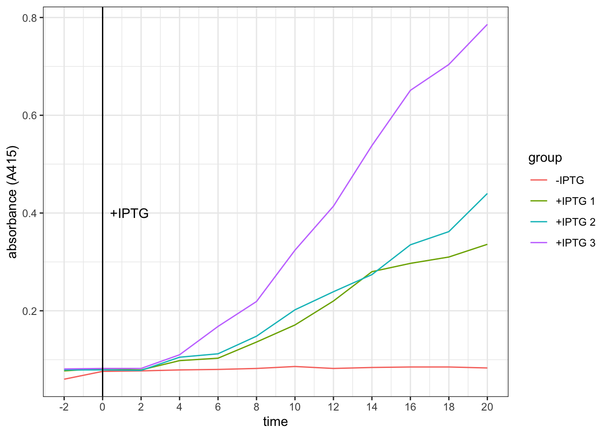
Conclusion. It takes about 4 minutes for the effect of IPTG on increasing galactosidase activity to become evident.
2 Identify the WT Strain
You are provided with two strains of coli labelled A and B, one of which (‘wild type’) is subject to catabolite repression, and one of which is not. Devise an experimental protocol to determine which strain is the wild type strain.
The E.coli strains are already grown on minimal medium containing 1% glycerol as a ‘poor’ carbon source (which should result in a high intracellualr cAMP concentration). Thus, to test for sensitivity of catabolite repression, we add a ‘good’ carbon source — glucose (which should increase cAMP level and repress galactosidase synthesis).
2.1 Protocol
- Measure OD600 of both strains.
- For each of strains A and B, set up two flasks,
+glucoseand-glucose(i.e. 4 flasks in total); then:- Add 9.440 ml of E. coli to all flasks
- collect 2 samples, at -2 min and 0 min which represent baseline activity and then:
- add 0.5 ml of glucose solution or glycerol solution to
+glucoseflasks and-glucoseflasks, respectively - collect 3 samples at 2, 4, 6 min and then:
- Add 0.1 ml IPTG (100 mM) to all flasks and mix (start induction)
- From 8 to 18 min, take 6 samples at 2 min intervals
- Add 0.1 ml cAMP to all flasks
- Collect samples and set up a blank: 20 \(\mu\)l of salt solution plus 80 \(\mu\)l permeabilisation reagent. (the blank is used by all samples taken from 4 flasks)
- Add 75 \(\mu\)l of ONPG to 75 \(\mu\)l of each sample and the blank. Incubate at 37oC.
- Incubate for appropriate amount of time (as determined in part 1)
- Read absorption at 415 nm against the blank.
- Plot a graph of A415 against time.
- Compare the plots. The strain unresponsive to catabolite inhibition should give similar plots in both
+glucoseand-glucoseconditions. The WT strain should show lower A415 (galactosidase activity) when glucose is added, since its galactosidase synthesis is inhibited by the ‘good’ carbon source, pyruvate.
The experiment in this part also answers the question in the next part, and results are shown there.
3 Devise an experimental protocol to show the role played by cAMP in catabolite repression.
Since our bacteria are grown on minimal medium containing 1% glycerol as a ‘poor’ carbon source (which should result in a high intracellualr cAMP concentration), we need to first use glucose to inhibit galactosidase production (as described in part 2). Then, we add cAMP. If the added cAMP enhances the production of galactosidase, we can prove that it’s cAMP whose level is decreased during catabolite repression (by addition of a ‘good’ carbon source, pyruvate).
The experimental procedure is described in the previous section.
3.1 Results (part 2 and 3)
Optical density. OD600 of strain A and B solutions are 0.309 and 0.505, respectively. Both are within the range in which the bacteria are in exponential growth phase. However, since their densitie differ, when interpreting the result we should not directly compare A to B. Instead, we should assess the effects of glucose and cAMP on each of the strains independently.
Galactosidase activity assay results. The raw data and the plot are shown below.
# strain A -glucose
Ag = c(.089, .049, .089, .048, .070, .072, .079, .111,
.156, .198, .254, NA, .388, .424, .419, .520)
# strain A +glucose
AG = c(.071, .071, .082, .049, .075, .070, NA, .102,
.130, .169, .207, .221, .251, .261, .342, .412)
# strain B -glucose
Bg = c(.087, .086, .097, .073, .091, .089, .099, .156,
.188, .273, .356, .482, .593, .699, .795, .943)
# strain B +glucose
BG = c(.084, .080, .084, .071, .087, .088, .096, .109,
.127, .150, .184, .216, .254, .322, .463, .543)
label = tibble (
x = c(2, 6, 18),
y = c(0.75, 0.7, 0.75),
label = c("+glucose", "+IPTG", "+cAMP")
)
tibble(
strain = rep(c("A", "B"), each = 32),
glucose = rep(c("-", "+", "-", "+"), each = 16),
time = rep(seq(-2, 28, 2), 4),
absorbance = c(Ag, AG, Bg, BG)
) %>%
ggplot(aes(time, absorbance)) +
geom_point(aes(shape = glucose))+
geom_smooth(aes(linetype = glucose), method = 'loess', formula = 'y ~ x')+
# label addition of glucose, IPTG and cAMP
geom_vline(xintercept = c(0, 6, 18))+
geom_text(data = label, aes(x, y, label = label))+
# plot strain A and strain B side by side
facet_grid(~strain)+
# tweak axes and add title & notes
scale_x_continuous(breaks = c(0, seq(-2, 30, 4)))+
labs(
title = "Effect of glucose and cAMP on galactosidase activity of strains A and B",
caption = "N.B. anomalous data values were replaced with NA and are invisible from the plot"
)## Warning: Removed 2 rows containing non-finite values (stat_smooth).## Warning: Removed 2 rows containing missing values (geom_point).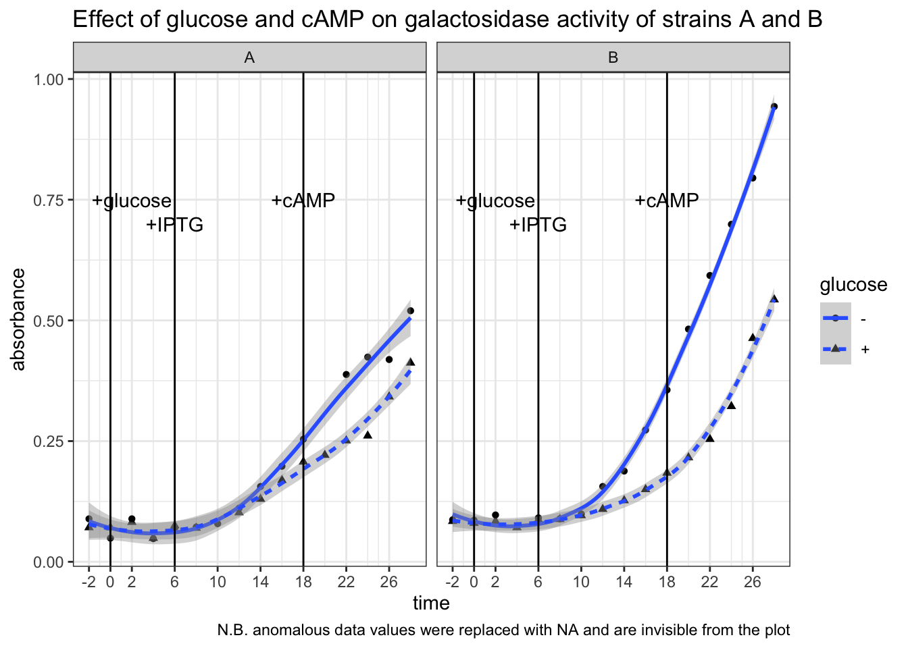
Conclusion. Strain B is WT. In strain B, galactosidase activity was significantly lower in +glucose than in -glucose from t = 6 min to t = 18 min (after IPTG induction, before addition of cAMP). In strain A the difference is less pronounced. Addition of cAMP at t = 18 min markedly increased galactosidase activity in strain B + glucose setup, but had no noticeable effects in the other three setups. This means catabolite repression by glucose is mediated by lowering concentration of cAMP, and thus an addition of cAMP could relieve this repression.
4 Devise experiments to test the following model.
\(\alpha\)-keto acids are the long sought `catabolites’ that control cAMP levels and that they act by inhibiting cAMP synthesis
(Solutions of \(\alpha\)-ketoglutarate, pyruvate, and succinate are available in the lab. E. coli is able to take up any of these exogenously added metabolites.)
4.1 Protocol
Repeat the experimental procedure described in part 2 with only the WT strain (strain B) and replacing glucose with different \(\alpha\)-keto acids. The concentration of the ketoacids are 0.5 M. Thus, to make their concentration in the 10 ml reaction mixture be 10 mM, 0.2 mL of each was added to different flasks individually (alpha-ketoglutarate was 1.0 M, so 0.1 mL of it was added instead).
If the addition of an \(\alpha\)-keto acid alone causes the activity of galactosidase to decrease, it can be considered as the evidence that this ketoacid is involved in catabolite repression. If the following addition of cAMP can ‘rescue’ galactosidase activity, then this can be considered as the evidence that this ketoacid inhibits cAMP synthesis.
4.2 Results
Optical density. OD600 = 0.393, which verifies that the bacteria were in exponential growth phase.
Galactosidase activity assay results. The raw data and the plot are shown below.
# glycerol (control)
gly = c(.075, .076, .076, .076, .077, .078, .116, .214,
.303, .404, .510, .609, .702, .901, 1.028, 1.173)
# pyruvate
pyr = c(.077, .075, .075, .075, .075, .072, .085, .088,
.095, .135, .149, .184, .234, .280, .469, .585)
# succinate
suc = c(.074, .076, .075, .074, .078, .080, .083, .120,
.152, .204, NA, .307, .408, .554, NA, .762)
# alpha-ketoglutarate
akg = c(.077, .076, .073, .074, .076, .078, .088, .097,
.122, .172, .215, .244, .293, .367, .448, .647)
tibble(
carbon_source = as_factor(rep(c("glycerol", "succinate", "alpha-ketoglutarate", "pyruvate"), each = 16)),
time = rep(seq(-2, 28, 2), 4),
absorbance = c(gly, suc, akg, pyr)
) %>%
ggplot(aes(time, absorbance)) +
geom_point(aes(shape = carbon_source))+
geom_smooth(aes(color = carbon_source), method = 'loess', formula = 'y ~ x')+
# rates after adding cAMP (tangent lines)
geom_abline(slope = 0.06314, intercept = c(-0.647, -1.00, -1.20))+
# label addition of glucose, IPTG and cAMP
geom_vline(xintercept = c(0, 6, 18))+
geom_text(data = label, aes(x, y, label = label))+
# tweak the axes and add title & notes
scale_x_continuous(breaks = c(0, seq(-2, 30, 4)))+
labs(
title = "Effect of different carbon sources on galactosidase activity",
caption = "N.B. anomalous data values were replaced with NA and are invisible from the plot"
)## Warning: Removed 2 rows containing non-finite values (stat_smooth).## Warning: Removed 2 rows containing missing values (geom_point).
Conclusion. All three \(\alpha\)-keto acids are shown to be capable of catabolite repression. After adding IPTG, the extents to which the \(\beta\)-galactosidase activity increases in E. coli provided with \(\alpha\)-keto acids are significantly and consistently lower than in E. coli provided with glycerol only. Addition of cAMP has no significant effect on the glycerol control, but was able to improve the rate of increase of \(\beta\)-galactosidase activity (gradient on the graph) in groups with \(\alpha\)-keto acids to about the same as the glycerol control (shown as tangent lines in the plot). The capability of different \(\alpha\)-keto acids can be ranked qualitatively: pyruvate > \(\alpha\)-ketoglutarate > succinate.
1 Quiz 5
1.1 Heatmaps (using ggplot2 in R)
Loading Packages
library(R.matlab)## R.matlab v3.6.2 (2018-09-26) successfully loaded. See ?R.matlab for help.##
## Attaching package: 'R.matlab'## The following objects are masked from 'package:base':
##
## getOption, isOpenlibrary(reshape2)
library(tidyverse)## ── Attaching packages ─────────────────────────────────────── tidyverse 1.3.0 ──## ✓ ggplot2 3.3.2 ✓ purrr 0.3.4
## ✓ tibble 3.0.4 ✓ dplyr 1.0.2
## ✓ tidyr 1.1.2 ✓ stringr 1.4.0
## ✓ readr 1.4.0 ✓ forcats 0.5.0## ── Conflicts ────────────────────────────────────────── tidyverse_conflicts() ──
## x dplyr::filter() masks stats::filter()
## x dplyr::lag() masks stats::lag()Loading Data
setwd('/Users/tianyishi/Documents/GitHub/ox/content/lab/src/Y2T3W7-genomics')
H3K4me3 <- readMat('H3K4me3_ChIP_seq_glucose_gene_levels.mat')$H3K4me3.ChIP.seq.glucose.gene.levels
MNase <- readMat('MNase_seq_glucose_gene_levels.mat')$MNase.seq.glucose.gene.levels
NET <- readMat('NET_seq_glucose_gene_levels_sense_strand.mat')$NET.seq.glucose.gene.levels.sense.strand
NET[NET < -0.5 | NET > 5] = NAplot_heatmap <- function(mat, title) {
return(
mat %>%
melt() %>%
ggplot(aes(Var2, Var1, fill=value))+
geom_tile()+
scale_x_continuous(expand = c(0,0), breaks = c(1, 501, 1001, 1501), labels = c('-500', 'TSS', '+500', '+1000'))+
scale_y_continuous(expand = c(0,0))+
scale_fill_gradient(low="blue", high = "yellow")+
labs(title=title,
x='Position relative to TSS (bp)',
y='Gene number')
)
}plot_heatmap(H3K4me3, 'H3K4me3 ChIP-seq Glucose')
plot_heatmap(MNase, "MNase")
plot_heatmap(NET, 'NET')
1.2 Heatmaps in Python (with seaborn)
Plotting above heatmaps using ggplot2 in R is very slow. Using seaborn in Python is faster (plots not displayed):
from scipy.io import loadmat
import numpy as np
import matplotlib.pyplot as plt
import seaborn as sns
sns.set()
MNase = np.array(loadmat("MNase_seq_glucose_gene_levels.mat")["MNase_seq_glucose_gene_levels"])
H3K4me3 = np.array(loadmat("H3K4me3_ChIP_seq_glucose_gene_levels.mat")["H3K4me3_ChIP_seq_glucose_gene_levels"])
NET = readMat('NET_seq_glucose_gene_levels_sense_strand.mat')['NET_seq_glucose_gene_levels_sense_strand.mat']
def plot_heatmap(mat, title):
p = sns.heatmap(mat)
p.set(
title=title,
xlabel='Position relative to TSS (bp)', ylabel='Gene number',
xticks=[0, 500, 1000, 1500],
xticklabels=["-500", "TSS", "+500", "+1000"],
yticks=[0, 999, 1999, 2999, 3999, 4999],
yticklabels=[1, 1000, 2000, 3000, 4000, 5000],
)
return p
plot_heatmap(MNase, "MNase seq Glucose")
plt.show()
plot_heatmap(H3K4me3, 'H3K4me3 ChIP-seq Glucose')
plt.show()
plot_heatmap(NET, 'NET-seq Glucose sense strand')
plt.show()1.3 Average Gene Profile
xylabs <- labs(x='Position relative to TSS (bp)', y='average NET-seq level')
xaxis <- scale_x_continuous(breaks = c(0, 500, 1000, 1500), labels = c('-500', 'TSS', '+500', '+1000'))
# Average gene profile MNase-seq Glucose
tibble(x=0:1500, y=apply(MNase, 2, mean)) %>%
ggplot(aes(x, y))+
geom_line()+
xaxis+
xylabs+
labs(title='Average gene profile MNase-seq Glucose')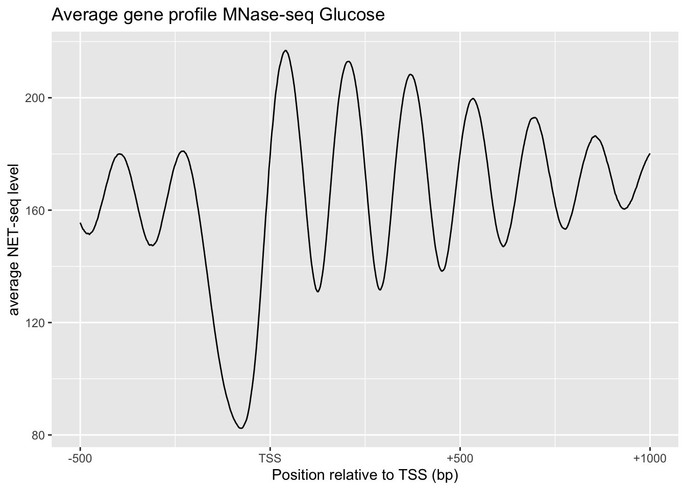
# NET-seq data highest and lowest H3K4me3 comparison
tibble() %>%
bind_rows(tibble(x=0:1500, y=apply(NET[1:501,], 2, function(x){mean(x, na.rm = TRUE)})) %>% add_column(`H3K4me3 level`='high')) %>%
bind_rows(tibble(x=0:1500, y=apply(NET[4501:5000,], 2, function(x){mean(x, na.rm = TRUE)})) %>% add_column(`H3K4me3 level`='low')) %>%
ggplot(aes(x, y, color=`H3K4me3 level`))+
geom_line()+
xylabs+xaxis+
labs(title='NET-seq data highest and lowest H3K4me3 comparison')
2 Quiz 8
2.1 Matlab
pos=yeast_gene_positions(:,[1,2,5])
% three colomns correspond to chromosome number, direction and TSS
avgs = []
i = 1
for p = pos.'
chr = NET_seq_data{p(1) + 16 * (1 - p(2))};
if p(2)==1
seq = chr(p(3):(p(3) + 299), :);
else
seq = chr((p(3) - 299):p(3), :);
end
avgs(i,:) = mean(seq);
i = i + 1;
end
corr(avgs,yeast_gene_measurements(:,1))2.2 Using R
setwd('/Users/tianyishi/Documents/GitHub/ox/content/lab/src/Y2T3W7-genomics')
pos <- readMat('yeast_gene_positions.mat')$yeast.gene.positions[,c(1,2,5)]
net <- lapply(readMat('NET_seq_genome_wide_data.mat')$NET.seq.data, as_vector)
clc <- apply(pos, 1, function(x){
mean(net[[x[1] + (1-x[2])*16]][x[3]:(x[3]+ifelse(x[2]==0, -1, 1)*299)])
})
exp <- readMat('yeast_gene_measurements.mat')$yeast.gene.measurements[,1]
plot(clc, exp)
cor(clc, exp)## [1] 0.82812841 Aim of the Practical
2 Background
Q1
Draw a simple schematic diagram of an IgG molecule, labelling the relevant chains and domains.
Diagram see Figure 2.1

Figure 2.1: Schematic of an IgG molecule.
- What is meant by a polyclonal antibody?
- A mixture of antibodies with diifferent Fv regions (antigen-binding sites) that are complementary to different epitopes (on the same antigen)
- What is a monoclonal antibody?
- A group of clone of a single antibody, with identical Fv region and bind to the same epitope.
- Detail the steps by which mouse monoclonal antibodies are raised.
- When the antigen molecules are injected (probably with an adjunvant e.g. Aluminium salt to elicit immune response more effectively), they activate antigen-presenting cells (APCs) called dendritic cells. Activated dendritic cells then use their MHC class II to present antigens on their plasma membrane, while migrating to the lymphatic system. When they encounter B cells and Th (T helper) cells with cognate BCR/TCRs in lymph nodes, they activate these B and T cells. With the help from activated dendritic cells and Th cells, B cells undergoes monoclonal expansion, class switching and somatic hypermutation, and differentiate into plasma cells, which produce a large number of antibodies in a short period.
3 Introduction to Radioimmunoassay
Q2
18 tubes are set up for radioimmunoassay containing antibody with a capacity for binding 1µg antigen. Both labelled antigen and a known concentration of unlabelled antigen are added to the tube as indicated. Note that the labelled antigen has been conjugated with 125I so that approx 50,000 cpm are associated with every \(\mu\text{g}\) of labelled antigen). Fill in the table below giving values rounded to the nearest integer.
| 0 | 0.5 | 1 | 2 | 4 | 8 | |
|---|---|---|---|---|---|---|
| 0.5 | 25000 | 25000 | 16667 | 10000 | 5556 | 2941 |
| 1.0 | 50000 | 33333 | 25000 | 16666 | 10000 | 5556 |
| 2.0 | 50000 | 40000 | 33333 | 25000 | 16667 | 10000 |
When the antibodies are saturated with antigens (when the amount of total antigen is greater than \(1 \mu\text{g}\)), the radioactivity is the proportion of labelled antigen multiplied by the maximal radioactivity (50000 cpm). There is one case (0 \(\mu\text{g}\) unlabelled; 0.5 \(\mu\text{g}\) labelled) where the antibodies are not saturated.
Q3
Use the data from Q2 to draw curves of counts precipitated versus amount of unlabelled antigen added at each concentration of labelled antigen.
There are two ways to plot it. The obvious way is to directly plot the radioactivity count against the amount of unlabelled antigen (Figure 3.1 A). However, by simply taking the reciprocal of the radioactivity count, a linear relationship can be obtained (Figure 3.1 B). This is explained in more detail in Q4.
# Loading data
d <- tibble(labelled = rep(c('0.5 microgram', '1 microgram', '2 microgram'), each = 6),
unlabelled = rep(c(0, 0.5, 1, 2, 4, 8), 3),
count = c(25000, 25000, 16667, 10000, 5556, 2941,
50000, 33333, 25000, 16666, 10000, 5556,
50000, 40000, 33333, 25000, 16667, 10000))
# Direct plot
direct <- ggplot(d, aes(unlabelled, count, linetype = labelled))+
geom_line()+
labs(title='Direct Plotting')
# Plot after transformation
linear <- ggplot(d, aes(unlabelled, 10000/count, linetype = labelled))+
geom_line()+
labs(title="Tranformed to Linear Relationship")
# Arrangement
ggarrange(direct, linear, ncol=2, nrow=1, common.legend = TRUE, legend="bottom", labels = c("A", "B"))
Figure 3.1: A: direct plotting; B: plotting the reciprocal of radioactivity count against unlabelled antigen amount.
Q4
Explain why these curves have a negative slope.
When antibodies are saturated with antigens, this simple relationship holds:
\[y=\dfrac{k}{x+k}\times A\]
where \(k\) is the amount of labelled antigen (constant), \(x\) is the amount of unlabelled antigen, \(A\) is the maximal radioactivity count (when \(x=0\) and all antibodies are bound to labelled antigens). In other words, the proportion of labelled antigen (relative to the total amount of antigen that saturates the antibodies) equals the ratio between the actual radioactivity and the maximal radioactivity. Thus, according to this equation, plotting radioactivity against amount of unlabelled antigen will result in a negative slope.
Taking the reciprocal results in a linear relationship between \(\dfrac{1}{y}\) and \(x\), and this was used to plot Q3 and later the calibration curve.
\[\dfrac{1}{y}=\dfrac{x}{Ak} + A\]
Q5
From the data in Q3 and Q4 and your graph, identify the range of counts precipitated that would be useful for calibration (i.e. that will give you a significant change in counts precipitated when you add antigen).
The slope of the curve is steeper (i.e. it’s more sensitive to small change in unlabelled antigen amount) as the radioactivity count is closer to maximum (50000). However, when the count is too close to 50000, the amount of unlabelled antigen would be too low, which would be more error-prone.
Thus my answer is: 5000-20000 cpm.
Q6
How does this vary with [Ag] labelled and [Ag] unlabelled?
A decrease in [Ag]labelled increases the sensitivity of RIA for detecting [Ag]unlabelled, but the amount of labelled antigen must be at least as much as the capacity of the antibodies (in this case, 1 microgram), otherwise it would be impossible to detect very small amount (precisely, capacity of antibodies minus amount of labelled antigen) of unlabelled antigen.
As [Ag]unlabelled increases, the change in cpm becomes less significant.
What does this tell you about the dynamic range of the assay (i.e. the range of amounts of unlabelled antigen you can measure) in these particular experiments?
The dynamic range varies with the amount of labelled antigen. Greater [Ag]labelled allows measurement of larger [Ag]unlabelled (but has less absolute precision/sensitivity); smaller [Ag]labelled allows more precise measurement of low concentrations of unlabelled antigen, but becomes insensitive when [Ag]unlabelled is high. The amount of labelled antigen must be at least as much as the capacity of the antibodies, as noted above.
4 Radioimmunoassay Simulation — Tutorial
(a) Choosing a suitable concentration of Ab
7. Enter your results in the table below, using scientific notation rather than strings of zeros.
| Tube | Ag dil | Ag vol (\(\mu\text{l}\)) | Ab dil (\(\mu\text{l}\)) | Ab vol | cpm |
|---|---|---|---|---|---|
| 1 | - | 0 | 106 | 1 | 489 |
| 2 | - | 0 | 105 | 1 | 5525 |
| 3 | - | 0 | 104 | 1 | 44899 |
| 4 | - | 0 | 103 | 1 | 51875 |
| 5 | - | 0 | 102 | 1 | 48750 |
| 6 | - | 0 | 101 | 1 | 51700 |
14. Fill out the table below using own your own data from the results screen, making sure you use scientific notation (ie NOT like the data table on screen). Calculate how much Ag you have added.
| Tube | Ag dil | Ag vol (\(\mu\text{l}\)) | Amount of Ag (pg) | Ab dil (\(\mu\text{l}\)) | Ab vol | cpm |
|---|---|---|---|---|---|---|
| 1 | 103 | 1 | 1000 | 106 | 1 | 4606 |
| 2 | 104 | 7 | 700 | 105 | 1 | 5178 |
| 3 | 104 | 5 | 700 | 104 | 1 | 9203 |
| 4 | 104 | 0 | 100 | 103 | 1 | 25687 |
| 5 | 105 | 0 | 10 | 102 | 1 | 51613 |
Unique Code: txt9
(b) Testing effect of changing [Ab] at fixed [Ag]
2. Increase the Ab concentration 10x (ie decrease the dilution factor to 103) and test against three concentrations of Ag (diluted 103, 104 and 105) (Keep volume of Ab and Ag at 1 \(\mu\text{l}\) for now). Click Experiment and 1mg/ml to generate data. Enter the results.
| Tube | Ag vol (\(\mu\text{l}\)) | Ag dil’n | Ag mass (pg) | Ab dil’n | Ab vol (\(\mu\text{l}\)) | cpm |
|---|---|---|---|---|---|---|
| 1 | 1 | 103 | 1000 | 103 | 1 | 48772 |
| 2 | 1 | 104 | 100 | 103 | 1 | 55150 |
| 3 | 1 | 105 | 10 | 103 | 1 | 43975 |
3. Now perform the same experiment but with the ‘optimal’ Ab dilution of 104.
| Tube | Ag vol (\(\mu\text{l}\)) | Ag dil’n | Ag mass (pg) | Ab dil’n | Ab vol (\(\mu\text{l}\)) | cpm |
|---|---|---|---|---|---|---|
| 1 | 1 | 103 | 1000 | 104 | 1 | 4122 |
| 2 | 1 | 104 | 100 | 104 | 1 | 22237 |
| 3 | 1 | 105 | 10 | 104 | 1 | 44681 |
4. Finally, set up three tubes with 10x LESS Ab than the ‘optimal’ i.e. diluted 105. Again, note your data:
| Tube | Ag vol (\(\mu\text{l}\)) | Ag dil’n | Ag mass (pg) | Ab dil’n | Ab vol (\(\mu\text{l}\)) | cpm |
|---|---|---|---|---|---|---|
| 1 | 1 | 103 | 1000 | 105 | 1 | 402 |
| 2 | 1 | 104 | 100 | 105 | 1 | 2366 |
| 3 | 1 | 105 | 10 | 105 | 1 | 4872 |
Q6
How does the amount of antibody influence the number of counts precipitated?
The number of counts increases with increasing antibody concentration until the antigen-binding capacity of antibodies exceed the amount of labelled antigen (when Ab dilution is 103). In this case, additional unlabelled antigens will just bind free antibodies without interfering with those bound to labelled antigens.

(d) Testing precision
| Tube | Ag vol (\(\mu\text{l}\)) | Ag dil’n | Ag mass (pg) | Ab dil’n | Ab vol (\(\mu\text{l}\)) | cpm |
|---|---|---|---|---|---|---|
| 1 | 2 | 104 | 200 | 104 | 1 | 19215 |
| 2 | 2 | 104 | 200 | 104 | 1 | 14307 |
| 3 | 2 | 104 | 200 | 104 | 1 | 14866 |
| 4 | 2 | 104 | 200 | 104 | 1 | 14474 |
| 5 | 2 | 104 | 200 | 104 | 1 | 14607 |
| 6 | 2 | 104 | 200 | 104 | 1 | 15341 |
| 7 | 0 | - | 0 | 104 | 1 | 51798 |
| 8 | 0 | - | 0 | 104 | 1 | 45749 |
| 9 | 0 | - | 0 | 104 | 1 | 52873 |
| 10 | 0 | - | 0 | 104 | 1 | 55798 |
| 11 | 0 | - | 0 | 104 | 1 | 57048 |
| 12 | 0 | - | 0 | 104 | 1 | 49474 |

Q9
Calculations see Figure 4.3

Figure 4.3: Q9
Explain the possible causes of the variation, bearing in mind the experiments have been carried out by an experienced operator
- Radioactive decay is a probablistic event, so the number of disintegrations per unit time naturally varies.
- There can also be random errors intrintic to the Geiger counter
5 RIA: Generating Your Own Data
Unique Code: yckmq9fe
(a) Finding a suitable concentration of antibody
4. Using the grid below…
See Figure 5.1

Figure 5.1: 5 (a) 4.
6. Note down useful data in the tables below
| Tube | Ag vol (\(\mu\text{l}\)) | Ag dil’n | Ag mass (pg) | Ab dil’n | Ab vol (\(\mu\text{l}\)) | cpm |
|---|---|---|---|---|---|---|
| 1 | 1 | 102 | 104 | 104 | 1 | 346 |
| 2 | 1 | 103 | 103 | 104 | 1 | 4083 |
| 3 | 1 | 104 | 102 | 104 | 1 | 18380 |
| 4 | 1 | 105 | 10 | 104 | 1 | 35217 |
8. If necessary, try varying the volume at given Ab dilution to see if you can optimise further.
I decided to use the 104 dilution.
(b) Generating the calibartion curve and (c) Finding the concentration of the unknown
5. Note all the relevant data in the table below
Implicitly shown in Figure 5.2 and 5.3.
Q10: How many replicates would be appropriate for your unknown solution? Explain your answer using sound statistical reasoning.
This depends on the precision we want to achieve, the p value we adopt, and the variance of the results of the repeats of that particular piece of experiment (which is unknown before we have done them). For example, if we choose \(p=0.05\) as the threshold, and did some experiments resulting in a mean of \(\bar{x}\) and standard deviation of \(s_x\), the confidence interval of the population mean, \(\mu\), will be:
\[\mu = \bar{x} \pm t_{0.975, n} \times \dfrac{s_x}{\sqrt{n}}\]
Clearly, in order to calculate \(n\), it should be specified clearly to what precision we want to achieve for \(\mu\), and calculate \(\mu\) each time we finish one repeat of the experiment (because \(\bar{x}\) and \(s_x\) will update).
You may have to test a range of Ag dilutions before you obtain a cpm value that can be read of your calibration curve (remember to find appropriate range first by altering only the dilution). Show your preliminary data here:
| Unknown Ag dilution | Unknown Ag volume (\(\mu\text{l}\)) | cpm |
|---|---|---|
| 102 | 1 | 454 |
| 103 | 5 | 826 |
| 103 | 1 | 3857 |
| 104 | 5 | 8245 |
| 104 | 1 | 19760 |
| 105 | 5 | 29922 |
| 105 | 1 | 33886 |
I decide to use Ag dilution of 104 and volume of 1 \(\mu\text{l}\), because 19760 is within the optimal range of the calibration curve (shown later, as a response to Q11)
Q11: Read the data off your calibration curve, and calculate the concentration of antigen in your unknown solution. (Each successful measurement will generate a value for the amount of antigen estimated to be present in that particular assay tube. You are required to calculate the concentration of antigen in the unknown solution). Explain your result below. Provide a discussion of your experimental approach, the validity of your answer (conduct appropriate statistical tests) and discuss any aspects that could have been improved. How would you express the precision of your answer (see Q.8)?
Here I load the data (and standardised variable names):
library(tidyverse)
raw <- read_tsv('./2020-03-08-immunoassay-in-silico/ria.tsv') %>%
transmute(antigen_volume = `Ag volume`,
antigen_dilution = `Ag dilution`,
antibody_volume = `Ab volume`,
antibody_dilution = factor(`Ab dilution`),
count = Count,
known = `Known?`)Calibration Curve
I extracted experiments with known amount of antigen and calculated the mass of antigen in pg:
known <- raw %>%
filter(known == 1, # experiments with known antigen amount for calibration
antibody_dilution == 10000) %>%
mutate(antigen_amount =
antigen_volume / 1000 # \mu L to ml
* 10^9 # mg to pg
/ antigen_dilution) %>%
filter(antigen_amount<=1000)First, I plotted count vs antigen amount directly (the blue line is fitted using the LOESS algorithm) in Figure 5.2 . Although this plot is not the most useful for calibration, it shows that the random variation is large when the count is greater than 20000. Therefore I aim at a count around 20000 in the test for the unkown antigen concentration.
known %>%
ggplot(aes(antigen_amount, count))+
geom_point()+
geom_smooth(span=0.9, se=FALSE)+
labs(x = 'antigen amount (pg)', title = 'Calibration Curve (cpm vs antigen amount)')+
theme_bw()
Figure 5.2: RIA Calibration Curve
The real calibration curve is shown in Figure 5.3 (The reasoning was described in Q3 and Q4).
known %>%
ggplot(aes(antigen_amount, 10000/count))+
geom_point()+
geom_smooth(span=0.9)+
labs(x = 'antigen amount (pg)', title = 'Calibration Curve (10000/cpm vs antigen amount)')+
theme_bw()
Figure 5.3: RIA Calibration Curve (10000/count vs antigen amount)
The equation of the fitted straight line can be calculated as follows:
with(known, summary(lm(10000/count ~ antigen_amount)))##
## Call:
## lm(formula = 10000/count ~ antigen_amount)
##
## Residuals:
## Min 1Q Median 3Q Max
## -0.33043 -0.05604 0.00116 0.05493 0.39587
##
## Coefficients:
## Estimate Std. Error t value Pr(>|t|)
## (Intercept) 2.591e-01 1.659e-02 15.62 <2e-16 ***
## antigen_amount 2.486e-03 3.819e-05 65.10 <2e-16 ***
## ---
## Signif. codes: 0 '***' 0.001 '**' 0.01 '*' 0.05 '.' 0.1 ' ' 1
##
## Residual standard error: 0.133 on 134 degrees of freedom
## Multiple R-squared: 0.9693, Adjusted R-squared: 0.9691
## F-statistic: 4238 on 1 and 134 DF, p-value: < 2.2e-16This gives:
\[10000/\text{cpm} = 0.2591 + 2.486\times10^{-3}\text{antigen amount}\]
or:
\[\text{antigen amount (in pg)}=4022526/\text{cpm} - 104.2237\]
Testing for the Unkown
Here is the data when I tried different antigen dilution and volumes to make the count close to 20000. \(1\mu\text{L}\) of \(1\times10^4\) dilution suffices:
unknown_trial <- raw %>%
filter(`known`== 0,
`antigen_volume` != 0) %>%
slice(1:7)
unknown_trial## # A tibble: 7 x 6
## antigen_volume antigen_dilution antibody_volume antibody_dilution count known
## <dbl> <dbl> <dbl> <fct> <dbl> <dbl>
## 1 1 100 1 10000 454 0
## 2 5 1000 1 10000 826 0
## 3 1 1000 1 10000 3857 0
## 4 5 10000 1 10000 8245 0
## 5 1 10000 1 10000 19760 0
## 6 5 100000 1 10000 29922 0
## 7 1 100000 1 10000 33886 0Then I repeated \(1\mu\text{L}\) of \(1\times10^4\) dilution 276 times (see Section 9.1 for the data). Curiously, the counts do not follow a normal distribution. It is bimodal:
unknown_test <- raw %>%
filter(`known`== 0,
`antigen_volume` != 0) %>%
slice(8:n())
unknown_test %>%
ggplot(aes(count))+
geom_histogram(bins = 40, fill='white', color='black')+
labs(title = 'Distribution of 276 Radioactivity Count Readings', x='radioactivity count')+
theme_bw()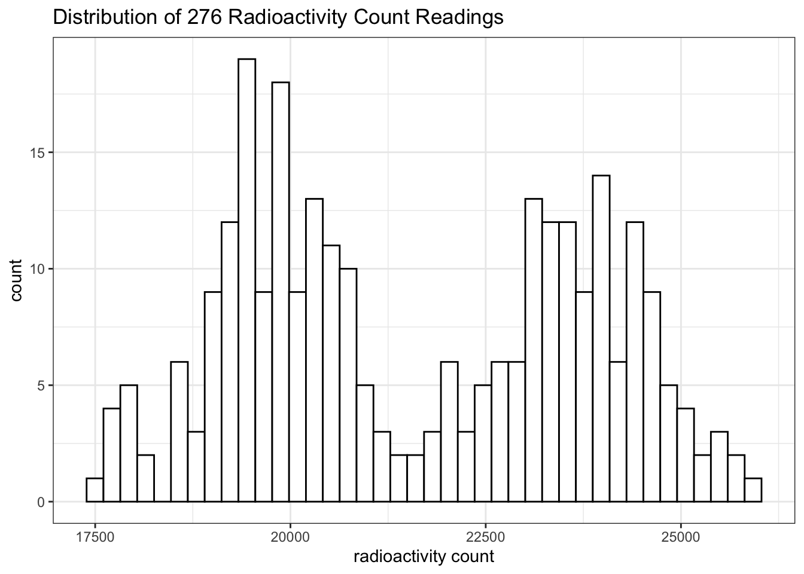
This is likely to be a bug in the ImmunoLab application.
If I had to assume it’s a normal distribution, a 95% confidence interval could be calculated:
cpm = unknown_test[['count']]
mass = 4022526/cpm - 104.2237
conc = mass /
1e-3 / # 1e-3 ml
1e-4 / # dilution
1e9 # pg to mg
mean = mean(conc); sd = sd(conc);
t = qt(0.975, length(conc)-1); t_sd = t*sd
c(mean=mean, sd = sd, t = t, t_sd = t_sd, lower = mean-t_sd, upper = mean+t_sd)## mean sd t t_sd lower upper
## 0.8361621 0.1897999 1.9686279 0.3736453 0.4625168 1.2098075(The relationship between cpm and antigen amount has been established previously: \(\text{antigen amount (in pg)}=4022526/\text{cpm} - 104.2237\))
The mean is 0.8362 mg/ml and the confidence interval is \(0.8362 \pm 0.3736\), or [0.4625 1.2098] mg/ml. (This is actually invalid because the distribution was not normal).
6 Enzyme-Linked Immunosorbentassay
(a) Background to ELISA
Q12
Draw a simple labelled diagram showing the principle of a sandwich ELISA.
See Figure 6.1.

Figure 6.1: Schematic of ELISA
Q13
Give an example of a chromogenic substrate for:
- phosphatase: BCIP/NBT
- peroxidase: TMB (3,3’,5,5’-tetramethylbenzidine)
Q14
Measuring the amount of enzyme in a well is technically simpler than measuring radioactivity, but it is much more susceptible to outside influences. List the factors that might affect the accuracy of your estimation of the amount of enzyme (assuming that optical density measurements are completely accurate).
- Variation in temperature and pH
- Aggregation of enzyme proteins (which leads to underestimation)
(b) METHOD: ElisaLab
Q15
What is the Beer-Lambert law and why is it relevant when working out how much labelled antibody to use?
Beer-Lambert Law is:
\[A = \epsilon cl\]
where \(A\) is the absorbance (\(A=\log_{10}\left(\dfrac{I_\text{incident}}{I_\text{transmitted}}\right)\)), \(\epsilon\) is the molar extinction coefficient, \(c\) is the concentration of the light-absorbing substance, \(l\) is the path length.
By measuring absorbance (\(A\)), the concentration of the coloured product, and hence the concentration of the enzyme-conjugated antibodies, can be deduced.
What would happen to the dynamic range if we used more labelled Ab?
7 ELISA Tutorial
As I will be plot several heatmaps to show the ELISA results, and the procedures are similar, I created this helper function to prevent repetition:
plot_elisa <- function(fn, title) {
df <- read_tsv(fn) %>%
janitor::clean_names() %>%
mutate(ag_dilution = factor(ag_dilution),
ab_dilution = factor(ab_dilution))
return(ggplot(df, aes(ab_dilution, ag_dilution, fill=absorbance))+
geom_tile()+
labs(title = title)+
scale_y_discrete(limits = rev(levels(df$ag_dilution)))+
scale_fill_gradient(high='blue', low='white')+
geom_text(aes(label=absorbance)))
}A small flaw: until now I haven’t found an easy way to show exponent forms of axes values in this case. It would have been straightforward if my axes had been continuous. However, heatmaps require discrete variables so I converted numerical values (continuous) to factors (discrete).
The results of the ELISA tutorial are shown in Figure 7.1.
plot_elisa('./2020-03-08-immunoassay-in-silico/elisa_tutorial.tsv', "ELISA Tutorial")
Figure 7.1: ELISA tutorial results
8 ELISA Experiment
Reference number: 2nf5rpcd
(a) Choosing a suitable concentration of antibody
Q16
Describe the steps you took to optimise Antibody dilution for the rest of the experiment.
First, I used a wide range of antibody dilutions (but with smaller intervals around \(10^4\), as the optimal concentration is more likely to be around here), these concentrations are \(10^2, 10^3, 4\times10^3, 10^4, 4\times10^4, 8\times10^4, 10^5, 10^6\). The antigen concentrations are evenly distributed, namely \(1\times10^n\) and \(4\times10^n\) for \(n\) in \(\{1,2,3,4,5,6\}\). The results are shown in Figure 8.1. The plot_elisa() function used here were defined in Section 7. I believe the plots I made are a better representation of ELISA results than screenshots or Excel spreadsheets. However, if you wish to view the raw data, you can download them from https://github.com/TianyiShi2001/ox/tree/master/content/lab/2020-03-08-immunoassay-in-silico/.
plot_elisa('./2020-03-08-immunoassay-in-silico/elisa_trial_1.tsv', "ELISA Trial 1 (choosing antibody concentration)")
Figure 8.1: ELISA Trial 1 (choosing antibody concentration) results.
As shown in Figure 8.1, the optimal antibody concentration is between \(4\times10^4\) and \(8\times10^4\). So in the next round of trial, I chosed antibody concentrations of \(3.2\times10^4\), \(4.0\times10^4\), \(6.4\times10^4\), and \(8.0\times10^4\). The antigen concentrations are the same as the previous trial. The experiments on these four antibody concentrations are repeated to fill 96 wells. The results are shown in Figure 8.2.
elisa_trial_2_1 <- plot_elisa('./2020-03-08-immunoassay-in-silico/elisa_trial_2_1.tsv', "ELISA Trial 2-1")
elisa_trial_2_2 <- plot_elisa('./2020-03-08-immunoassay-in-silico/elisa_trial_2_2.tsv', "ELISA Trial 2-2")
ggarrange(elisa_trial_2_1, elisa_trial_2_2, ncol=2, nrow=1, common.legend = TRUE, legend="bottom", labels = c("A", "B"))
Figure 8.2: ELISA Trial 2 (choosing antibody concentration) results.
The plot suggests that an antibody concentration of \(4.0\times10^4\) would be optimal. Its maximum is close to, but does not exceed, 2.0.
(b) Generating the calibration curve
Q17
Discuss how you generated data for your calibration curve (you can append titled data sets to the end of this document)
Q18
Plot your results to generate a calibration curve. Ensure axes are labelled, amount (not dilution) of antigen is plotted and that you have provided a descriptive title of the graph.
First, I used the same antigen concentrations as in previous two trials (\(1\times10^n\) and \(4\times10^n\) for \(n\) in \(\{1,2,3,4,5,6\}\).), as shown below (this code reads data into dataframe std1 while printing unique dilutions used).
std1 <- read_tsv('./2020-03-08-immunoassay-in-silico/elisa_std1.tsv') %>%
janitor::clean_names() %T>%
# print dilutions used
(function(d){print(sort(unique(d$ag_dilution)))}) %>%
# convert antigen dilution into antigen concentration in ng/ml
# keep only two variables: ag_conc and absorbance
transmute(ag_conc = 10^6 / ag_dilution, absorbance)## [1] 1e+01 4e+01 1e+02 4e+02 1e+03 4e+03 1e+04 4e+04 1e+05 4e+05 1e+06 4e+06As shown in Figure 8.3, if plotted directly, it can be observed that absorbance increases with increasing antigen concentration as expected, but the mathematical relationship is unclear and so the ‘optimal range’ is also vague.
ggplot(std1, aes(ag_conc, absorbance))+
geom_point()+
labs(title = 'ELISA priliminary calibration curve', x = 'antigen concentration (ng/ml)')
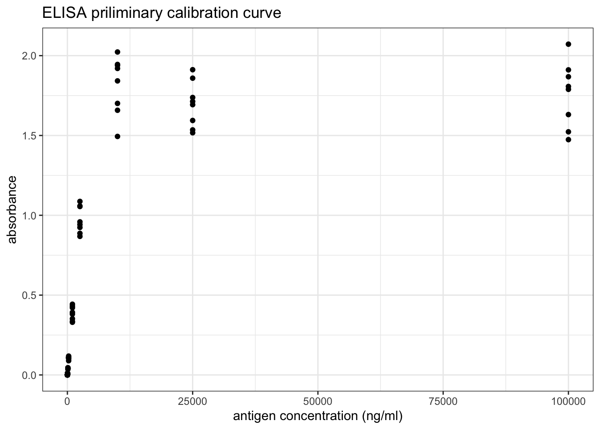
Figure 8.3: ELISA priliminary calibration curve
However, as shown in Figure 8.4, a linear relationship can be obtained by a double-log transformation. In this plot, it is clear that the useful range of antigen concentration would be \(1.0<\log_{10}{c}<{3.4}\), or \(10^1 < c < 10^{3.4}\), where \(c\) is the antigen concentration in \(ng/ml\). This corresponds to a range of dilution of \(4\times10^2 < x < 10^5\).
ggplot(std1, aes(log10(ag_conc), log10(absorbance)))+
geom_point()+
labs(title = 'ELISA priliminary calibration curve (double log)',
x = 'log(antigen concentration (ng/ml))')+
geom_abline(intercept = -3.4, slope = 1)+
geom_text(x=2,y=-1, label='y = x - 3.4', family="Helvetica", size=4.5)
Figure 8.4: ELISA priliminary calibration curve (double log)
Based on previous knowledge that the dilution should be in the range \(4\times10^2 < x < 10^5\), more experiments are carried out. The dilutions used are shown below.
std2 <- read_tsv('./2020-03-08-immunoassay-in-silico/elisa_std2.tsv') %>%
janitor::clean_names() %T>%
# print dilutions used
(function(d){print(sort(unique(d$ag_dilution)))}) %>%
# convert antigen dilution into antigen concentration in ng/ml
# keep only two variables: ag_conc and absorbance
transmute(ag_conc = 10^6 / ag_dilution, absorbance)## [1] 800 1000 2000 4000 8000 10000 20000 32000 40000 64000 80000The calibration curve is shown in Figure 8.5.
ggplot(std2, aes(log10(ag_conc), log10(absorbance)))+
geom_point()+
labs(title = 'ELISA calibration curve',
x = 'log(antigen concentration (ng/ml))')+
geom_smooth(method='lm')
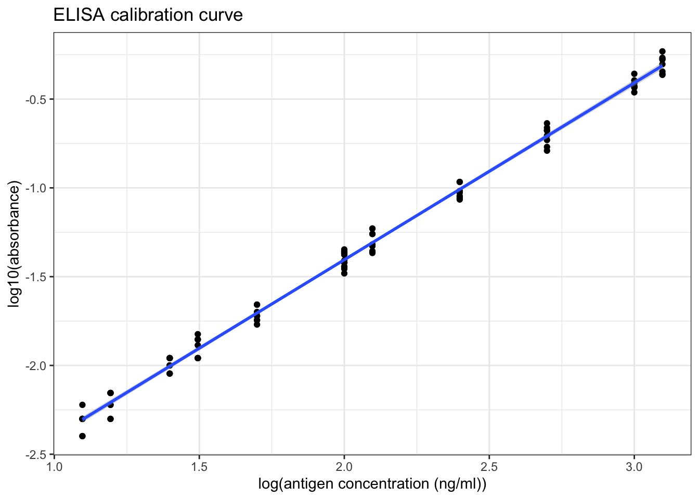
Figure 8.5: ELISA calibration curve (double log)
Q19
Briefly comment on the graph:
summary(lm(log10(std2$absorbance) ~ log10(std2$ag_conc)))##
## Call:
## lm(formula = log10(std2$absorbance) ~ log10(std2$ag_conc))
##
## Residuals:
## Min 1Q Median 3Q Max
## -0.09315 -0.03981 0.00023 0.04625 0.08439
##
## Coefficients:
## Estimate Std. Error t value Pr(>|t|)
## (Intercept) -3.397722 0.015712 -216.3 <2e-16 ***
## log10(std2$ag_conc) 0.996370 0.007425 134.2 <2e-16 ***
## ---
## Signif. codes: 0 '***' 0.001 '**' 0.01 '*' 0.05 '.' 0.1 ' ' 1
##
## Residual standard error: 0.04711 on 94 degrees of freedom
## Multiple R-squared: 0.9948, Adjusted R-squared: 0.9948
## F-statistic: 1.801e+04 on 1 and 94 DF, p-value: < 2.2e-16As shown in Figure 8.5 and in the linear model summary above, when the antigen concentration is in the range \(10^1 < c < 2.5\times10^3\) (i.e. the absorbance is in the range \(0.004 < A < 1.000\)), there is a significant correlation between the antigen concentration and the absorbance, which can be described by this equation:
\[\log_{10}{A} = \log_{10}{c} - 3.40\]
where \(A\) is the absorbance and \(c\) is the antigen concentration in \(ng/ml\).
As shown in Figure 8.5, when log(antigen concentration) is less than 1.7, the variation within each sets of absorbance readings is slightly larger, so the optimal range should be narrow down to \(10^{1.7} < c < 10^{3.4}\) for antigen concentration, or \(0.020 < A < 1.000\) for absorbance.
(c) Measuring concentration of the unknown
Q20
Using appropriate dilutions and number of replicates (discuss briefly below). Calculate the concentration of antigen in the original (unknown) solution, stating your calculation process. Where relevant, you can append titled data sets to the end of this document. Esnure your answer is statistically valid (think back to the stats test used in RiaLab)
First, I used a broad range of dilutions (again, \(1\times10^n\) and \(4\times10^n\) for \(n\) in \(\{1,2,3,4,5,6\}\)).
df <- read_tsv('./2020-03-08-immunoassay-in-silico/elisa_exp1.tsv') %>%
janitor::clean_names() %>%
transmute(ag_dilution = factor(ag_dilution), absorbance)
ggplot(df, aes(ag_dilution, absorbance))+
geom_boxplot()+
labs(title = "ELISA Experiment for the Unknown")+
geom_hline(yintercept = 1.000, color='red', size = 0.6)+
geom_hline(yintercept = 0.020, color='red', size = 0.6)
Figure 8.6: Finding the appropriate dilution of the unknown so that the absorbance fall within the linear range.
# scale_x_discrete(limits = rev(levels(df$ag_dilution)))+As learnt from Q19, the linear range is where the absorbance lies between 0.020 and 1.000. According to Figure 8.6, a \(10^3\) dilution would be the most appropriate. Therefore, I repeat 480 times with this dilution.
elisa_absorbance <- read_tsv('./2020-03-08-immunoassay-in-silico/elisa_exp_fin.tsv') %>%
janitor::clean_names() %>%
extract2('absorbance')Curiously, again, the distribution is bimodal (the data is shown in Section 9.2:
qplot(elisa_absorbance, geom = 'histogram', bins = I(40), fill=I('white'), color=I('black'),
main = "distribution of 480 absorbance readings for the unknown")
Figure 8.7: Distribution of 480 absorbance readings for the ELISA assay with 1:1000 unknown sample and 1:40000 antibody
If I had to assume it’s a normal distribution, a 95% confidence interval could be calculated:
conc <- 10^(log10(elisa_absorbance) + 3.40) *
10^3 / # dilution
10^6 # ng/ml to mg/ml
mean <- mean(conc); sd = sd(conc);
t <- qt(0.975, length(conc)-1); t_sd <- t*sd
c(mean=mean, sd = sd, t = t, t_sd = t_sd, lower = mean-t_sd, upper = mean+t_sd)## mean sd t t_sd lower upper
## 0.80949203 0.08313395 1.96492886 0.16335230 0.64613973 0.97284433(Used the relationship between antigen concentration and absorbance established previously: \(\log_{10}{A} = \log_{10}{c} - 3.40\))
The mean is 0.8095 mg/ml and the confidence interval is \(0.8094\pm0.1634\), or [0.6461 0.9728] mg/ml. (This is actually invalid because the distribution was not normal).
9 Supplementary Information
For a complete set of raw data, please go to https://github.com/TianyiShi2001/ox/tree/master/content/lab/2020-03-08-immunoassay-in-silico/.
9.1 RIA
The 276 counts for \(1\mu\text{L}\) of \(1\times10^4\) dilution of antigen:
unknown_test[['count']]## [1] 20336 17947 20618 23919 23332 23224 21150 23007 23463 20596 25927 18685
## [13] 20270 21910 20466 20162 19880 17502 20314 24646 20281 20151 18946 20346
## [25] 23137 21715 20108 19858 23180 19445 18012 20477 23256 19782 23235 24407
## [37] 23647 24320 20064 21291 19521 22735 19250 21573 23560 18631 25656 19337
## [49] 19174 24016 19630 24136 20292 24005 17643 23365 19890 20629 24103 20173
## [61] 25102 20933 19174 19065 23397 19880 22388 19174 23159 23658 22008 24787
## [73] 22931 24309 24841 23484 23777 25048 20976 24700 20053 20629 20792 19565
## [85] 19261 24527 18099 24516 23072 22279 21139 23745 21715 19782 19977 19923
## [97] 24353 18609 23452 19000 20336 19858 18968 23951 24744 23539 24418 23810
## [109] 21009 19478 23625 19152 25211 23202 22963 22844 20379 22409 25069 17730
## [121] 20846 23452 24646 25254 24722 18533 24429 19597 19532 24483 22073 19521
## [133] 19804 25493 19956 20889 18240 17806 19445 18577 24168 19543 25395 23929
## [145] 19912 24820 24060 18707 18881 20368 19044 24114 23224 20640 23995 20227
## [157] 24049 19348 23506 24679 19152 20412 19413 23560 22442 23897 19814 23159
## [169] 22399 19586 22605 23473 23148 19337 20650 17969 23061 22789 25482 19749
## [181] 24537 23408 20564 18989 22127 19011 20596 19337 19022 19402 20455 23169
## [193] 22724 19966 20835 20216 23148 23951 19510 20650 19206 24559 23647 19434
## [205] 22073 19880 20705 19543 17849 23691 23940 17686 20813 19250 22876 19521
## [217] 23767 22225 25688 23734 18826 20683 20694 20433 21573 19206 25004 23354
## [229] 23332 24635 22540 17914 22692 23017 22149 19652 24038 20900 24744 20346
## [241] 22681 20064 19717 19109 24331 19500 23235 19825 19152 19684 19630 21421
## [253] 23365 22822 20162 22073 23202 24505 24309 22062 23799 19836 22963 24429
## [265] 19293 23962 21204 23886 18685 24147 20531 19901 19521 23734 20118 241259.2 ELISA
The 480 absorbance readings:
elisa_absorbance## [1] 0.354 0.343 0.355 0.279 0.268 0.303 0.348 0.358 0.283 0.358 0.277 0.378
## [13] 0.290 0.290 0.304 0.284 0.355 0.331 0.345 0.271 0.276 0.356 0.349 0.301
## [25] 0.259 0.308 0.331 0.357 0.284 0.361 0.295 0.332 0.282 0.381 0.278 0.340
## [37] 0.358 0.316 0.273 0.285 0.359 0.366 0.286 0.297 0.275 0.307 0.368 0.351
## [49] 0.341 0.339 0.313 0.354 0.346 0.284 0.334 0.278 0.300 0.286 0.312 0.353
## [61] 0.361 0.364 0.357 0.372 0.285 0.358 0.274 0.282 0.280 0.344 0.253 0.300
## [73] 0.336 0.300 0.301 0.348 0.355 0.374 0.276 0.290 0.279 0.370 0.338 0.270
## [85] 0.373 0.351 0.356 0.353 0.256 0.294 0.339 0.315 0.351 0.288 0.311 0.352
## [97] 0.352 0.280 0.333 0.368 0.334 0.294 0.297 0.299 0.279 0.343 0.357 0.309
## [109] 0.366 0.363 0.310 0.311 0.358 0.335 0.361 0.296 0.257 0.334 0.308 0.293
## [121] 0.293 0.336 0.342 0.352 0.366 0.287 0.266 0.286 0.360 0.313 0.358 0.287
## [133] 0.305 0.363 0.343 0.284 0.290 0.339 0.268 0.350 0.363 0.334 0.343 0.271
## [145] 0.324 0.299 0.258 0.334 0.309 0.336 0.374 0.362 0.290 0.344 0.303 0.352
## [157] 0.295 0.314 0.286 0.300 0.287 0.292 0.369 0.349 0.292 0.349 0.360 0.334
## [169] 0.339 0.277 0.286 0.347 0.293 0.325 0.288 0.278 0.303 0.271 0.289 0.305
## [181] 0.309 0.364 0.344 0.309 0.355 0.360 0.298 0.298 0.299 0.322 0.340 0.364
## [193] 0.344 0.337 0.311 0.344 0.294 0.365 0.351 0.297 0.384 0.327 0.350 0.315
## [205] 0.326 0.301 0.316 0.292 0.300 0.366 0.346 0.329 0.291 0.355 0.290 0.300
## [217] 0.301 0.370 0.299 0.340 0.336 0.274 0.301 0.359 0.342 0.345 0.350 0.356
## [229] 0.347 0.317 0.354 0.286 0.339 0.358 0.326 0.362 0.358 0.349 0.329 0.298
## [241] 0.317 0.337 0.327 0.309 0.301 0.291 0.368 0.342 0.359 0.347 0.337 0.352
## [253] 0.292 0.294 0.370 0.377 0.287 0.292 0.279 0.349 0.315 0.370 0.365 0.280
## [265] 0.352 0.342 0.342 0.363 0.278 0.335 0.372 0.351 0.354 0.348 0.292 0.293
## [277] 0.298 0.327 0.286 0.374 0.335 0.348 0.359 0.274 0.314 0.354 0.359 0.347
## [289] 0.331 0.345 0.371 0.283 0.370 0.289 0.359 0.344 0.356 0.374 0.267 0.356
## [301] 0.304 0.333 0.279 0.344 0.355 0.366 0.291 0.306 0.352 0.361 0.372 0.270
## [313] 0.359 0.317 0.294 0.340 0.257 0.265 0.283 0.285 0.293 0.330 0.345 0.322
## [325] 0.294 0.336 0.362 0.369 0.343 0.283 0.324 0.326 0.341 0.299 0.362 0.368
## [337] 0.358 0.334 0.283 0.331 0.278 0.261 0.351 0.337 0.288 0.278 0.269 0.298
## [349] 0.361 0.311 0.355 0.361 0.287 0.343 0.267 0.294 0.343 0.293 0.286 0.312
## [361] 0.296 0.340 0.267 0.281 0.301 0.326 0.356 0.287 0.265 0.296 0.295 0.254
## [373] 0.289 0.371 0.274 0.285 0.349 0.361 0.353 0.277 0.341 0.332 0.336 0.296
## [385] 0.274 0.321 0.279 0.297 0.346 0.273 0.370 0.298 0.380 0.273 0.338 0.342
## [397] 0.369 0.308 0.361 0.294 0.312 0.353 0.371 0.288 0.354 0.278 0.367 0.280
## [409] 0.315 0.335 0.334 0.369 0.308 0.292 0.369 0.349 0.312 0.286 0.289 0.379
## [421] 0.349 0.315 0.339 0.297 0.355 0.310 0.287 0.342 0.296 0.275 0.337 0.353
## [433] 0.329 0.302 0.332 0.356 0.311 0.344 0.283 0.358 0.288 0.332 0.341 0.278
## [445] 0.367 0.284 0.287 0.321 0.343 0.286 0.307 0.271 0.311 0.266 0.357 0.348
## [457] 0.298 0.297 0.361 0.370 0.377 0.362 0.330 0.388 0.287 0.332 0.295 0.357
## [469] 0.279 0.306 0.313 0.355 0.279 0.303 0.328 0.334 0.339 0.335 0.312 0.305absorbance <-
c(0.086, 0.142, 0.548, 0.976, 1.419, 1.294,
1.161, 1.472, 1.800, 2.003, 1.777, 1.463,
1.430, 1.486, 1.538, 1.254, 0.820, 0.503,
0.388, 0.235, 0.204, 0.163, 0.148, 0.151,
0.169, 0.221, 0.381, 0.701, 0.954, 0.917,
0.651, 0.423, 0.274, 0.191, 0.034, 0.031
)
volume <- 1:36
plot(volume, absorbance, xlab = 'volume (ml)', type = 'p',
ylim=c(0, 2.2), yaxs='i')
lines(volume, absorbance)
lines(c(5, 5), c(0.0, 1.419), col='red')
lines(c(10, 10), c(0.0, 2.003), col='red')
lines(c(15, 15), c(0.0, 1.538), col='red')
lines(c(29, 29), c(0.0, 0.954), col='red')
text(4, 1.5, 'ferritin (450 kDa)')
text(10, 2.1, expression(paste(gamma, '-globulin (155 kDa)')))
text(17, 1.6, 'serum albumin (67 kDa)')
text(29, 1.05, 'cytochrome-c (14 kDa)')
volume <- c(5, 10, 15, 29) + 44
log_mw <- log(c(450, 155, 67, 14), 10)
plot(volume, log_mw,
xlab='elution volume (ml)', ylab='log(molecular weight) (kDa)')
(mod <- lm(log_mw ~ volume))##
## Call:
## lm(formula = log_mw ~ volume)
##
## Coefficients:
## (Intercept) volume
## 5.52272 -0.06075abline(mod, col='red')
(mod1 <- lm(log_mw[-4] ~ volume[-4]))##
## Call:
## lm(formula = log_mw[-4] ~ volume[-4])
##
## Coefficients:
## (Intercept) volume[-4]
## 6.68975 -0.08271abline(mod1, col='blue')
points(c(67, 60), log(c(25.8, 29.1), 10), col='red')
par(mar = c(5,5,2,5))
f <- c(13, 11, 11, 12, 12, 15, 14, 14, 16, 16, 14, 17,
16, 16, 16, 17, 17, 18, 15, 17, 16, 15, 14, 15,
19, 22, 24, 32, 41, 28, 34, 37, 75, 76, 79, 65,
341, 608, 1554, 3107, 2264, 1768, 2196, 1424, 33)
v <- 28:72
plot(v, f, type='p', col='red', ylab='Fluoresence (arbitrary units)', xlab='elution volume (mL)')
lines(v, f, col='red')
A <- c(0.086, 0.072, 0.067, 0.067, 0.067, 0.079, 0.073, 0.065, 0.068,
0.070, 0.065, 0.064, 0.080, 0.067, 0.073, 0.079, 0.077, 0.074,
0.078, 0.075, 0.082, 0.078, 0.076, 0.085, 0.081, 0.080, 0.081,
0.099, 0.118, 0.122, 0.111, 0.146, 0.180, 0.140, 0.126, 0.117,
0.141, 0.125, 0.145, 0.196, 0.138, 0.161, 0.176, 0.150, 0.071)
par(new = T)
plot(v, A, axes=F, xlab=NA, ylab=NA, col='blue', pch=4)
lines(v, A, col='blue')
axis(side = 4)
mtext(side = 4, line = 3, 'Absorbance (arbitrary units)')
legend('topleft',
legend=c('fluoresence', 'absorbance'),
lty=c(1, 1), pch=c(1, 4), col=c('red', 'blue'))
abline(v = c(60, 67, 70))
axis(side = 1, at = 67,labels = T)Protein Structure
Homology Modelling
Swiss Model
Model Evaluation
- GMQE (global model quality estimation)
- 0-1, higher better
- combines properties from the target-alignment and the template search method
- replecting the expected accuracy of a model built with that alignment and the template and the coverage of the target
- computed before modelling and after modelling. The latter also takes into account the QMEAN
- QMEAN
- QMEAN z score: around 0: ideal; < -4.0: low quality
- QMEAN is a composite estimator based on different geometrical properties and provides both global and local absolute quality estimates on the basis of one single model
- the QMEAN z-score provides an estimate of the ‘degree of nativeness’ of the structural features observed in the model on a global scale. It indicates whether the QMEAN score of the model is comparable to what one expect from experimental structures of similar size
- 4 terms of the global QMEAN quality score:
- the interaction potential between Cβ atoms only
- and between all atoms
- solvation potential
- torsion angle potential
- the accuracy of local QMEAN scores is enhanced by QMEANDisCo
- below 0.6: low quality
- if downloaded, local score is reported in the B-factor column of the PDB file
- can be visualised by choosing the colour scheme ‘QMEAN’
- QMEANDisco assesses the consistency of observed interatomic distances in the model with ensemble information extracted from experimentally determined protein structures that are homologous to the target sequence. The ‘local quality’ plot shows, for each residue of the model (x-axis), the expected similarity to the native structure (y-axis)
- in the ‘comparison’ plot, model quality scores are related to scores obtained for experimental structures of similar size. The x-axis shows protein length and the y-axis shows the normalized QMEAN score. Every dot represents an experimentally determined structure. The mean and standard deviation of the experimental structures around the x-location of the star (the model) are the basis to calculate the QMEAN z-score of the model.
2019
Specific radioactivity of ATP and glucose.
1 Aim
- Given a sample containing (fake) radioactive 14C glucose and 3H ATP:
- determine concentration of glucose and ATP.
- Given that both concentrations lie between 1mM and 10mM.
- Given that \(\epsilon^{260}_\text{ATP}=1.57\times10^4 \text{ mol}^{-1}\text{ dm}^3\text{ dm}^{-1}\)
- determine radioactivity of the sample (virtual practical)
- and hence determine the specific radioactivity of ATP and glucose
- determine concentration of glucose and ATP.
- 23 samples have glucose and ATP concentrations falling into two distinct classes. They are independently measured by 23 pairs of students. Determine these concentrations using the class results and assess precision and accuracy.
2 Reagents and Apparatus Provided
- 15mL sample solution
- 0.1 M Na3PO4 buffer at pH 7.0
- 1mM ABTS
- Glucose Oxidase (100 U/mL) and peroxidase (20 U/mL)
- Solid glucose
- Spectrophotometer
3 Method
3.1 ATP concentration
3.1.1 Dilution
3.1.1.1 Determining scale of dilution
Given that 1mM < ATP < 10mM and that \(\epsilon^{260}_\text{ATP}=1.57\times10^4 \text{ mol}^{-1}\text{ dm}^3\text{ dm}^{-1}\), according to \(A^{260}=\epsilon^{260}cl\):
if no dilution:
\[ \begin{aligned} 1.57\times10^4\times0.001<&A^{260}<1.57\times10^4\times0.01 \\ 15.7<&A^{260}_\text{raw}<157 \\ \end{aligned} \]
clearly, a 1:100 dilution would be very likely to produce a sensible \(A^{260}\):
\[0.157<A^{260}_\text{1:100 dilution}<1.57\]
3.1.1.2 Making dilution
5mL of 1:100 diluton is made serially by first fixing 500 \(\mu\text{L}\) sample with 4.5mL buffer then mixing 500 \(\mu\text{L}\) of the resulting 1:10 dilution with another 4.5mL buffer.
A preliminary test gives \(A^{260}_\text{1:100 dilution}=0.503\), which is within the range where the spectrophotometer is accurate, so we made 4 more 1:100 dilutions using the method described above.
3.1.2 Results
See section 4.1
3.2 Glucose concentration
3.2.1 Mechanism
Glucose itself does not have convenient absorption. Thus, glucose oxidase, ABTS and peroxidase is added to make a green solution (glucose is first oxidised by oxidase to produce gluconic acid and H2O2; peroxidase then catalyses the reaction between H2O2 and ABTS to produce a green dye).
3.2.2 Determine the volume of enzyme
We want the reaction to ‘virtually’ complete (i.e. > 99% conversion of substrate) in 10 min.
For an enzyme reaction:
\[-\dfrac{ds}{dt}=v-\dfrac{V_\text{max}s}{K_m+S}\]
As the reaction approaches completion, \(s<<K_m\):
\[-\dfrac{ds}{dt}=\dfrac{V_\text{max}s}{K_m}\]
Integrating to determine the total time for a given change in \(s\):
\[ \begin{aligned} -\int_{s_0}^{s_1}{\dfrac{ds}{s}}&=\dfrac{V_\text{max}}{K_m}\int_0^t dt \\ \ln\dfrac{s_0}{s_1}&=\dfrac{V_\text{max}t}{K_m} \end{aligned} \]
For a decrease in \(s\) from 100% to 1% in 10 min:
\[ \begin{aligned} \ln\dfrac{100}{1}&=\dfrac{V_\text{max}\times 10}{K_m} \\ V_\text{max}&=0.4605K_m \text{ (mol L}^{-1}\text{min}^{-1}\text{)} \end{aligned} \]
Our assay volume will be 4.0mL, so the amound of enzyme, in U (\(\mu\text{mol min}^{-1}\)), will be
\[\text{amount of enzyme in U}=0.4605\times K_m \times 4.0 \times 10^{-3}\times10^6=1842K_m\]
where \(K_m\) has unit M.
For GOD, \(K_m=1\text{ mM}\), and the provided enzyme concentration is 100U/mL:
\[ \begin{aligned} K_m&=1\text{ mM} \\ \text{minimum amount of enzyme}&=1842 \times 1 \times 10^{-3}=1.84 \text{ U} \\ \text{minimum volume of enzyme}&=1.84 \div 100=0.0184 \text{ mL} \end{aligned} \]
For POD, \(K_m=100\text{ }\mu\text{M}\), and the provided enzyme concentration is 20U/mL:
\[ \begin{aligned} K_m&=100\text{ }\mu\text{M} \\ \text{minimum amount of enzyme}&=1842 \times 100 \times 10^{-6}=0.184 \text{ U} \\ \text{minimum volume of enzyme}&=0.184 \div 20=0.0092 \text{ mL} \end{aligned} \]
We decided to use an excess amount of enzyme (i.e. 0.1mL for both). This guarantees that the reactions will complete within 10 min, and makes it easier to make up the 4mL total volume for assay (see section 3.2.4.2).
3.2.3 Determining \(\lambda_\text{max}\)
Measuring absorbance near \(\lambda_\text{max}\) reduces error. An 100nmol-glucose-containing (i.e. with 1mL 0.1mM glucose solution, see section 3.2.4.2) assay result is used. The absorbance in the range 350nm to 450nm is measured, and \(\lambda_\text{max} = 418\text{ nm}\). We then used this wavelength for all glucose assays.
3.2.4 Calibration
Calibrate \(A^{418}\) with known glucose concentrations, then we can map \(A^{418}_\text{sample}\) to the calibration curve to determine sample glucose concentration.
3.2.4.1 Dilution
- 0.18 g glucose is dissolved in 100mL buffer, which gives 10mM glucose solution (which is handy, as the maximum possible concentration of glucose in the sample is also 10mM)
- 100mL 0.1mM glucose solution is made by mixing 1mL 10mM glucose solution with 99mL buffer (1:100 dilution).
3.2.4.2 Assay
Assays are made on 4mL mixtures with varying amount of glucose, according to the following table:
| ABTS | Buffer | 0.1mM glucose | H2O | GOD | POD | nmol glucose |
|---|---|---|---|---|---|---|
| 2mL | 0.8mL | 1.0mL | 0mL | 0.1mL | 0.1mL | 100 |
| 2mL | 0.8mL | 0.8mL | 0.2mL | 0.1mL | 0.1mL | 80 |
| 2mL | 0.8mL | 0.6mL | 0.4mL | 0.1mL | 0.1mL | 60 |
| 2mL | 0.8mL | 0.4mL | 0.6mL | 0.1mL | 0.1mL | 40 |
| 2mL | 0.8mL | 0.2mL | 0.8mL | 0.1mL | 0.1mL | 20 |
| 2mL | 0.8mL | 0mL | 1.0mL | 0.1mL | 0.1mL | 0 |
Then the mixture is incubated at 37\(^\circ\text{C}\) for 10 minutes (in a theromostatically-controlled water bath), then \(A^{418}\) is measured.
Every row is repeated 3 times.
3.2.5 Sample Assay
The sample is diluted 1:100 by mixing 1mL sample with 99mL buffer.
4mL assays are made on 1mL 1:100 dilution 3 times, according to the following table (identical to the assays used for calibration except that an unknown concentration is used this time)
| ABTS | Buffer | diluted sample | GOD | POD | |
|---|---|---|---|---|---|
| 2mL | 0.8mL | 1.0mL | 0.1mL | 0.1mL |
3.2.6 Results
See section 4.2
3.3 Radioactivity Counting (Virtual)
0.2mL sample is mixed with 1.8mL scintillation fluid in a polyvial and placed into the scintillation counter. The count time is 2min. The results are shown in section 5.5.
4 Our Results
4.1 ATP
(Methods in section 3.1)
A <- c(0.503, 0.513, 0.508, 0.525, 0.516)
c_ATP <- A/1.57e4*100*1000
kable(tibble(`$A^{260}_\\text{1:100 dilution}$`=A, `[ATP] of raw sample (mM)`=c_ATP))| \(A^{260}_\text{1:100 dilution}\) | ATP of raw sample (mM) |
|---|---|
| 0.503 | 3.203822 |
| 0.513 | 3.267516 |
| 0.508 | 3.235669 |
| 0.525 | 3.343949 |
| 0.516 | 3.286624 |
Statistical summary of ATP in sample:
x <- c_ATP; n <- length(x); df <- n - 1; t = qt(0.975, df)
c(mean=mean(x), sd=sd(x), SE=sd(x)/sqrt(n), t = t, `t*SE` = t*sd(x)/sqrt(n))## mean sd SE t t*SE
## 3.26751592 0.05309978 0.02374695 2.77644511 0.06593209Which gives 95% confidence interval: \(\text{[ATP]}=3.268\pm0.054\) mM
4.1.1 Distinguishing between 4.0mM and 4.5mM ATP
The percentage error (coefficient of variance) of this experiment is:
\[c_v=\dfrac{s_x}{\bar{x}}=\dfrac{0.054}{3.268}=0.0165\]
for \(\bar{x}\) = 4.0 and 4.5, \(s_x=c_v\bar{x}\) = 0.0661 and 0.0744, respectively.
To distinguish between the two, two sample t test is used. If \(n\) measurements are made on each concentration, then
\[t=\dfrac{\bar{x_1}-\bar{x_2}}{\sqrt{\dfrac{s_1^2}{n}+\dfrac{s_2^2}{n}}}=\dfrac{4.5-4.0}{\sqrt{\dfrac{0.0661^2+0.0744^2}{n}}}=\sqrt{25.26n}\]
then we can get a list of \(p\) values for each \(n\):
n <- 2:8
df <- n - 1
t <- sqrt(25.26 * n)
p <- (1 - pt(t, df)) * 2
names(p) <- paste('n =', n)
round(p, 5)## n = 2 n = 3 n = 4 n = 5 n = 6 n = 7 n = 8
## 0.08898 0.01294 0.00210 0.00036 0.00006 0.00001 0.00000as n increases, \(p\) decreases. When n = 3, \(p\) is already less than 0.05.
4.2 Glucose
(Methods in section 3.2)
4.2.1 Calibration
The results are shown below:
A1 <- c(0.952, 0.815, 0.709, 0.496, 0.272, 0)
A2 <- c(1.223, 0.969, 0.704, 0.415, 0.222, 0)
A3 <- c(1.194, 0.919, 0.682, 0.452, 0.236, 0)
A <- c(A1, A2, A3)
glucose = c(100, 80, 60, 40, 20, 0)
kable(tibble(`nmol glucose in 4mL assay` = glucose, `$A^{418}_1$` = A1,
`$A^{418}_2$` = A2, `$A^{418}_3$` = A3))| nmol glucose in 4mL assay | \(A^{418}_1\) | \(A^{418}_2\) | \(A^{418}_3\) |
|---|---|---|---|
| 100 | 0.952 | 1.223 | 1.194 |
| 80 | 0.815 | 0.969 | 0.919 |
| 60 | 0.709 | 0.704 | 0.682 |
| 40 | 0.496 | 0.415 | 0.452 |
| 20 | 0.272 | 0.222 | 0.236 |
| 0 | 0.000 | 0.000 | 0.000 |
To fit a straight line, linear regression is used. The coefficients are shown below:
summary(lm(A ~ 0 + rep(glucose, 3)))##
## Call:
## lm(formula = A ~ 0 + rep(glucose, 3))
##
## Residuals:
## Min 1Q Median 3Q Max
## -0.181273 -0.000982 0.005691 0.039277 0.089727
##
## Coefficients:
## Estimate Std. Error t value Pr(>|t|)
## rep(glucose, 3) 0.0113327 0.0002387 47.48 <2e-16 ***
## ---
## Signif. codes: 0 '***' 0.001 '**' 0.01 '*' 0.05 '.' 0.1 ' ' 1
##
## Residual standard error: 0.06132 on 17 degrees of freedom
## Multiple R-squared: 0.9925, Adjusted R-squared: 0.9921
## F-statistic: 2254 on 1 and 17 DF, p-value: < 2.2e-16which shows there is a linear relationship \(A^{418}=0.01133n_\text{glucose}\) with \(R^2=0.9921\).
Then we can plot it (CI added).
ggplot(data.frame(A, glucose), aes(glucose, A))+
geom_point()+
geom_smooth(formula = y ~ 0 + x, method = 'lm')+
labs(x = 'nmol glucose in 4mL assay', y = expression(A ^ 418),
title = 'Calibrationn Curve for 4mL essay')
4.2.2 Sample result
Three independent measurements of \(A^{418}_\text{sample}\) gives 0.863, 0.872 and 0.871. According to the linear relationship \(A^{418}=0.01133n_\text{glucose}\) we can calculate the amount (in nmol) of glucose in 1mL 1:100 dilution, then the concentration of the raw sample can be calculated easily:
A <- c(0.863, 0.872, 0.871) # sample absorbance
n <- A/0.01133 # nmol glucose in 1 mL 1:100 dilution
(c_glucose_sample <- n * 1e-9 # converting to mol/mL (1:100 dilution)
/ 1e-3 # converting to M (1:100 dilution)
* 100 # in M (raw sample)
* 1e3) # converting to mM (raw sample)## [1] 7.616946 7.696381 7.687555Statistical summary:
x <- c_glucose_sample; n <- length(x); df <- n - 1; t = qt(0.975, df)
c(mean=mean(x), sd=sd(x), SE=sd(x)/sqrt(n), t = t, `t*SE` = t * sd(x)/sqrt(n))## mean sd SE t t*SE
## 7.66696087 0.04353824 0.02513682 4.30265273 0.10815499Which gives 95% confidence interval: \(\text{[glucose]}=7.667\pm0.057\) mM
4.2.3 Distinguishing between 4.0mM and 4.5mM glucose
Similar to the calculation for ATP shown in section 4.1.1, first calculate the percentage error (coefficient of variance) of this experiment:
\[c_v=\dfrac{s_x}{\bar{x}}=\dfrac{0.057}{7.667}=0.00743\]
for \(\bar{x}\) = 4.0 and 4.5, \(s_x=c_v\bar{x}\) = 0.0297 and 0.0335, respectively.
To distinguish between the two, two sample t test is used. If \(n\) measurements are made on each concentration, then
\[t=\dfrac{\bar{x_1}-\bar{x_2}}{\sqrt{\dfrac{s_1^2}{n}+\dfrac{s_2^2}{n}}}=\dfrac{4.5-4.0}{\sqrt{\dfrac{0.0297^2+0.0335^2}{n}}}=\sqrt{124.7n}\]
then we can get a list of \(p\) values for each \(n\):
n <- 2:8
df <- n - 1
t <- sqrt(124.7 * n)
p <- (1 - pt(t, df)) * 2
names(p) <- paste('n =', n)
round(p, 5)## n = 2 n = 3 n = 4 n = 5 n = 6 n = 7 n = 8
## 0.04026 0.00266 0.00020 0.00002 0.00000 0.00000 0.00000as n increases, \(p\) decreases. When n = 2, \(p\) is already less than 0.05.
4.2.3.1 What difference would it make to your assay if you doubled the concentrations of ABTS, GOD and POD?
Time required for incubation will be shorter and the final intensity of colors (and hence absorption) will be the same.
5 Class Results
5.1 Data1
ATP <- c(3.93, 4.04, 3.01, 3.94, 3.20, 3.15, 2.81,
4.07, 3.17, 3.05, 4.20, 3.15, 4.17, 3.05,
3.90, 2.97, 3.11, 4.13, 3.27, 3.85, 2.92)
ATP_sd <- c(0.164, 0.082, 0.080, 0.080, 0.140, 0.126, 0.139,
0.071, 0.140, 0.142, 0.002, 0.012, 0.240, 0.033,
0.051, 0.091, 0.187, 0.160, 0.053, 5.e-4, 0.218)
glucose <- c(6.89, 6.92, 8.36, 7.38, 7.10, 7.65, 7.70,
9.09, 7.34, 7.60, 8.92, 8.80, 8.50, 6.60,
3.81, 9.80, 7.73, 9.80, 7.67, 8.50, 8.63)
glucose_sd <- c(0.0880, 0.0104, 0.1560, 0.0150, 0.0603, 0.5900, 1.4580,
0.0470, 0.1640, 0.2810, 0.2500, 0.2000, 0.0010, 0.1180,
0.0170, 0.0425, 0.1500, 0.0530, 0.0440, 0.1400, 0.4800)
class_results <- tibble(ATP, ATP_sd, glucose, glucose_sd)
kable(tibble(`ATP conc`=ATP, `ATP sd`=ATP_sd,
`Glucose conc`=glucose, `Glucose sd`=glucose_sd))| ATP conc | ATP sd | Glucose conc | Glucose sd |
|---|---|---|---|
| 3.93 | 0.1640 | 6.89 | 0.0880 |
| 4.04 | 0.0820 | 6.92 | 0.0104 |
| 3.01 | 0.0800 | 8.36 | 0.1560 |
| 3.94 | 0.0800 | 7.38 | 0.0150 |
| 3.20 | 0.1400 | 7.10 | 0.0603 |
| 3.15 | 0.1260 | 7.65 | 0.5900 |
| 2.81 | 0.1390 | 7.70 | 1.4580 |
| 4.07 | 0.0710 | 9.09 | 0.0470 |
| 3.17 | 0.1400 | 7.34 | 0.1640 |
| 3.05 | 0.1420 | 7.60 | 0.2810 |
| 4.20 | 0.0020 | 8.92 | 0.2500 |
| 3.15 | 0.0120 | 8.80 | 0.2000 |
| 4.17 | 0.2400 | 8.50 | 0.0010 |
| 3.05 | 0.0330 | 6.60 | 0.1180 |
| 3.90 | 0.0510 | 3.81 | 0.0170 |
| 2.97 | 0.0910 | 9.80 | 0.0425 |
| 3.11 | 0.1870 | 7.73 | 0.1500 |
| 4.13 | 0.1600 | 9.80 | 0.0530 |
| 3.27 | 0.0530 | 7.67 | 0.0440 |
| 3.85 | 0.0005 | 8.50 | 0.1400 |
| 2.92 | 0.2180 | 8.63 | 0.4800 |
5.2 Preliminary graphical analysis
Density plots and histograms are used to examine the distribution of measurements:
op <- par(mfrow=c(2,2))
for(i in c('ATP', 'glucose')){
main = paste0('[', i, '] in 21 samples:'); xlab <- paste(i, 'concentration')
{
plot(density(class_results[[i]], bw = c(ATP = 0.1, glucose = 0.2)[i]),
main = paste(main, 'density plot'), xlab = xlab)
rug(class_results[[i]])
}
{
hist(class_results[[i]], breaks = 10, main = paste(main, 'histogram'), xlab = xlab)
}
}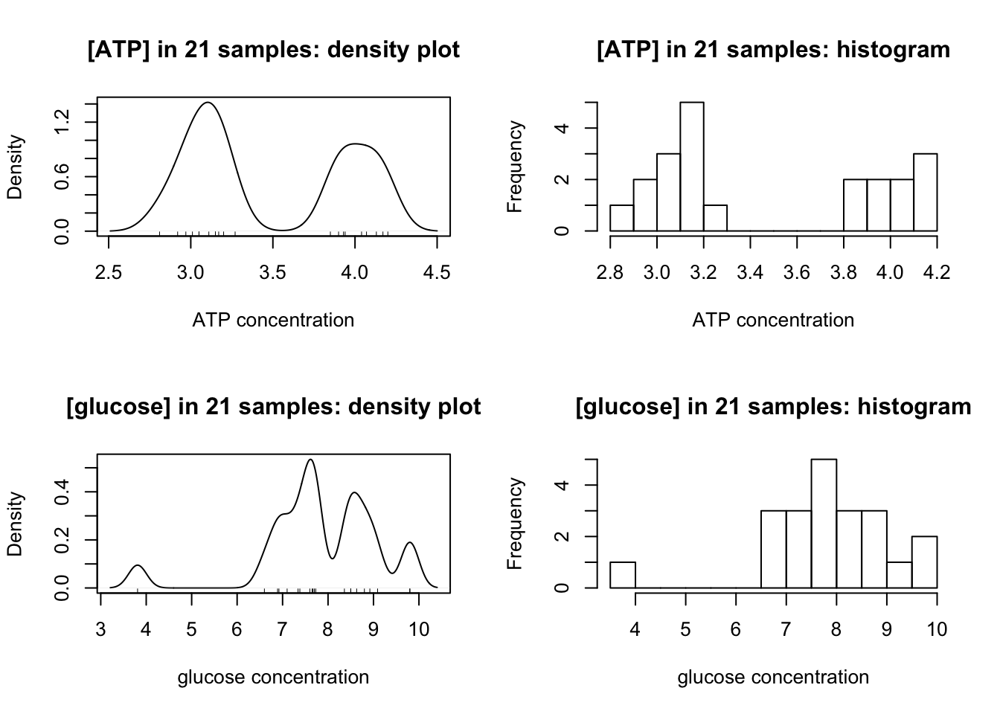
Clealy, ATP has a clear bimodal distribution, with two peaks at around 3.1 and 4.0.
The distibution of glucose is affected by two outliers (the maximum and minimum). After their removal, a bimodal distribution, which peaks at 7.6 and 8.8, is also produced:
op <- par(mfrow=c(1,2))
glucose <- glucose[glucose != max(glucose) & glucose != min(glucose)]
main = '[glucose] corrected'; xlab <- 'glucose concentration'
{
plot(density(glucose, bw = c(ATP = 0.1, glucose = 0.2)[i]),
main = paste(main, 'density plot'), xlab = xlab)
rug(glucose)
}
{
hist(glucose, breaks = 10, main = paste(main, 'histogram'), xlab = xlab)
}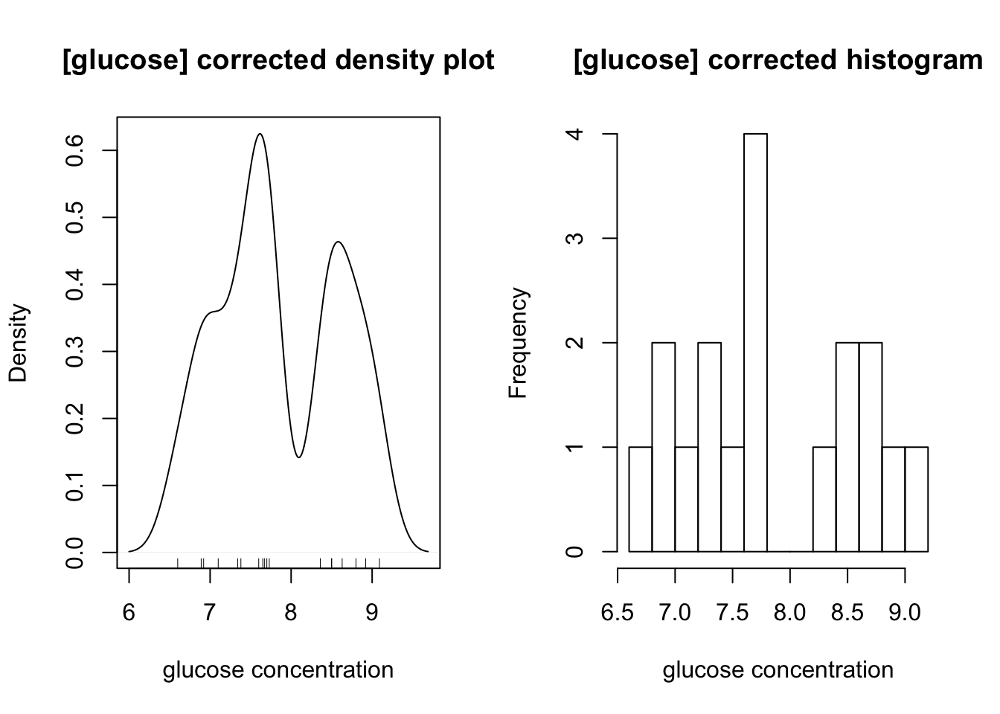
5.3 ATP concentration
5.3.1 Grouping and grouped confidence interval of mean
According to the plots, evidently there are two ATP concentrations, so we need to divide the 21 measurements into two groups, and calculate their mean and CI separately.
ATP1 <- ATP[ATP < 3.5] # less than 3.5mM, around 3.0mM
ATP2 <- ATP[ATP > 3.5] # more than 3.5mM, around 4.0mMFor the ATP around 3.0:
x <- ATP1; n <- length(x); df <- n - 1; t = qt(0.975, df)
c(mean=mean(x), sd=sd(x), SE=sd(x)/sqrt(n), t = t, `t*SE` = t*sd(x)/sqrt(n))## mean sd SE t t*SE
## 3.07166667 0.12995337 0.03751431 2.20098516 0.0825684395% confidence interval: \(\text{[ATP]}=3.07\pm0.08\) mM
For the ATP around 4.0:
x <- ATP2; n <- length(x); df <- n - 1; t = qt(0.975, df)
c(mean=mean(x), sd=sd(x), SE=sd(x)/sqrt(n), t = t, `t*SE` = t*sd(x)/sqrt(n))## mean sd SE t t*SE
## 4.02555556 0.12620530 0.04206843 2.30600414 0.0970099895% confidence interval: \(\text{[ATP]}=4.03\pm0.10\) mM
5.3.2 Test for significance of the difference in concentration between the two groups
To test there is a significant difference between the two concentrations, t-test2 is used:
t.test(ATP1, ATP2)##
## Welch Two Sample t-test
##
## data: ATP1 and ATP2
## t = -16.923, df = 17.66, p-value = 2.346e-12
## alternative hypothesis: true difference in means is not equal to 0
## 95 percent confidence interval:
## -1.0724720 -0.8353058
## sample estimates:
## mean of x mean of y
## 3.071667 4.025556\(p=2.3\times10^{-12}<<0.05\); the two concentrations are significantly different
5.3.3 Test for diviation from given concentrations
The solutions were actually made up to be 3.0mM and 4.0mM ATP. Were they made up correctly? We need two one-sample t tests using the given concentrations as the population mean, \(\mu\):
3.0mM: (\(H_0\): true concentration is 3.0mM)
t.test(ATP1, mu=3.0)##
## One Sample t-test
##
## data: ATP1
## t = 1.9104, df = 11, p-value = 0.08249
## alternative hypothesis: true mean is not equal to 3
## 95 percent confidence interval:
## 2.989098 3.154235
## sample estimates:
## mean of x
## 3.071667\(p=0.082>0.05\), failed to reject hypothesis. Solution made up correctly.
4.0mM: (\(H_0\): true concentration is 4.0mM)
t.test(ATP2, mu=4.0)##
## One Sample t-test
##
## data: ATP2
## t = 0.60748, df = 8, p-value = 0.5604
## alternative hypothesis: true mean is not equal to 4
## 95 percent confidence interval:
## 3.928546 4.122566
## sample estimates:
## mean of x
## 4.025556\(p=0.56>0.05\), failed to reject hypothesis. Solution made up correctly.
5.4 Glucose
5.4.1 Grouping and grouped confidence interval of mean
By observing the plots, the boundary between the two concentrations of glucose is 8.0mM, so we can divide them into two groups:
glucose1 <- glucose[glucose < 8.0]
glucose2 <- glucose[glucose > 8.0]And calculate their 95% CIs separately:
lapply(list(glucose1=glucose1, glucose2=glucose2), function(x){
n <- length(x); df <- n - 1; t = qt(0.975, df)
c(mean=mean(x), sd=sd(x), SE=sd(x)/sqrt(n), t = t, `t*SE` = t*sd(x)/sqrt(n))
})## $glucose1
## mean sd SE t t*SE
## 7.3254545 0.3921317 0.1182322 2.2281389 0.2634377
##
## $glucose2
## mean sd SE t t*SE
## 8.6857143 0.2612698 0.0987507 2.4469119 0.2416343The confidence intervals are: \(7.33\pm0.27\) mM and \(8.69\pm0.22\) mM
5.4.2 Test for significance of the difference in concentration between the two groups
t-test performed to test for significance:
t.test(glucose1, glucose2) ##
## Welch Two Sample t-test
##
## data: glucose1 and glucose2
## t = -8.8301, df = 15.912, p-value = 1.573e-07
## alternative hypothesis: true difference in means is not equal to 0
## 95 percent confidence interval:
## -1.686972 -1.033548
## sample estimates:
## mean of x mean of y
## 7.325455 8.685714\(p=1.57\times 10^{-7}<<0.05\), which shows the two concentrations are significantly different.
5.4.3 Test for diviation from given concentrations
The solutions were actually made up to be 7.0mM and 9.0mM ATP. Were they made up correctly? We need two one-sample t tests using the given concentrations as the population mean, \(\mu\):
7.0mM: (\(H_0\): true concentration is 7.0mM)
t.test(glucose1, mu=7.0)##
## One Sample t-test
##
## data: glucose1
## t = 2.7527, df = 10, p-value = 0.02038
## alternative hypothesis: true mean is not equal to 7
## 95 percent confidence interval:
## 7.062017 7.588892
## sample estimates:
## mean of x
## 7.325455\(p=0.020<0.05\), reject null hypothesis. Solution made up incorrectly.
9.0mM: (\(H_0\): true concentration is 9.0mM)
t.test(glucose2, mu=9.0)##
## One Sample t-test
##
## data: glucose2
## t = -3.1826, df = 6, p-value = 0.01901
## alternative hypothesis: true mean is not equal to 9
## 95 percent confidence interval:
## 8.444080 8.927349
## sample estimates:
## mean of x
## 8.685714\(p=0.019<0.05\), reject null hypothesis. Solution made up incorrectly.
5.5 Radioactivity
5.5.1 Results of the sample
Counts in the H channel and C channel are shown below:
H <- c(14178.5, 13963, 14065, 14356.5, 13809, 14157.5, 13824.5, 14032, 14094.5, 14014)
C <- c(3411, 3472.5, 3386.5, 3516, 3375.5, 3418.5, 3438, 3464.5, 3513.5, 3438.5)Statistical summaries are calculated:
n <- 10; df <- n-1; t = qt(0.975, df)
lapply(list(`H Channel`=H, `C Channel`=C), function(i){
c(mean=mean(i), sd=sd(i), SE=sd(i)/sqrt(n), t = t, `t*SE` = t*sd(i)/sqrt(n))
})## $`H Channel`
## mean sd SE t t*SE
## 14049.450000 164.091176 51.890186 2.262157 117.383756
##
## $`C Channel`
## mean sd SE t t*SE
## 3443.450000 48.359447 15.292600 2.262157 34.59426495% confidence intervals:
- H channel: \(14049.5\pm 117.38\) cpm
- C channel: \(3443.5\pm 34.59\) cpm
5.5.2 Correction for overlap
Let counts due to 3H = \(X\) and counts due to 14C = \(Y\). Let \(\alpha\) be the fraction in H channel of all counts due to 3H and \(\beta\) be the fraction in C channel of all counts due to 14C, so that for a sample with mixed isotopes:
\[H = \alpha X + (1-\beta)Y\] \[C = (1-\alpha)X+\beta Y\]
\(\alpha\) and \(\beta\) can be determined by counting pure 3H and 14C, respectively. Here are the results:
c(H_in_H = mean(c(464814.5, 462463.5, 464775.5)),
H_in_C = mean(c(14825.5, 15057.5, 14210.0)),
C_in_H = mean(c(10295, 9842.5, 9922.5)),
C_in_C = mean(c(47989, 48868.5, 49133.5)))## H_in_H H_in_C C_in_H C_in_C
## 464017.83 14697.67 10020.00 48663.67which gives:
\[ \begin{aligned} \alpha &= 464017.83/(464017.83+14697.67)=0.9693 \\ \beta &= 48663.67/(48663.67+10020.00)=0.8293 \end{aligned} \]
Plugging in sample results:
\[ \begin{aligned} H &= \alpha X + (1-\beta)Y = 0.9693X+(1-0.8293)Y=14049.5(\pm117.38) \\ C &= (1-\alpha)X+\beta Y = (1-0.9693)X+0.8293Y = 3443.5(\pm34.59) \end{aligned} \]
Simplifying…
\[ \begin{aligned} 0.9693X+0.1707Y&=14049.5(\pm117.38) \\ 0.0307X+0.8293Y &= 3443.5(\pm34.59) \end{aligned} \]
Solving for X: (note that uncertainties are added)
\[ \begin{aligned} 4.7075X+0.8293Y &=60721.7(\pm507.31) \\ 0.0307X+0.8293Y &= 3443.5(\pm34.59) \\ 4.6769X &= 57278.2(\pm541.9) \\ X &= 12247.2(\pm115.9) \end{aligned} \]
Solving for Y:
\[ \begin{aligned} 0.9693X+0.1707Y&=14049.5(\pm117.38) \\ 0.9693X+26.18Y &= 108722.6(\pm1058.66) \\ 26.01Y &= 94673.1(\pm1176.04) \\ Y &= 3639.4(\pm45.2) \end{aligned} \]
which gives:
\[ \begin{aligned} \text{actual H (ATP) counts in 0.2mL sample}&=12247.2(\pm115.9) \\ \text{actual C (glucose) counts in 0.2mL sample} &= 3639.4(\pm45.2) \end{aligned} \]
5.5.3 Specific Radioactivity
The radioactivity counting were done on 0.2mL sample. Our ATP concentration (section 4.1) is \(\text{[ATP]}=3.268\pm0.054\) mM and glucose concentration (section 4.2.2) is \(\text{[glucose]}=7.667\pm0.057\) mM. Thus, the specific radioactivity of ATP and glucose are:
\[ \begin{aligned} \text{ATP: }12247.2(\pm115.9)/[0.2\times10^{-3}\times3.268\times 10^{-3}(\pm0.054\times 10^{-3})]&= 1.87(\pm0.05)\times 10^{10} \text{ cpm mol}^{-1}\\ \text{glucose: } 3639.4(\pm45.2)/[0.2\times10^{-3}\times7.667\times 10^{-3}(\pm0.057\times 10^{-3})]&= 2.37(\pm0.05) \times 10^{9} \text{ cpm mol}^{-1} \end{aligned} \]
(the \(\pm0.05\) comes from the maximal possible numerator (e.g. \(12247.2 + 115.9\) for ATP) over the least possible denominator (e.g. \((3.268-0.054)\times10^{-3}\) for ATP))
6 Appendix
6.1 People should report all measurements to get a true 95% confidence interval
The statistical computations perfomed in section 5.3 and section 5.4 for class results are actually improper.
Let’s say 3 people are measuring a concentration whose true value is 4.0. Here are their results:
c1 <- rnorm(5, 4.0, 3) # 5 times, sd about 3
c2 <- rnorm(6, 4.0, 2) # 6 times, sd about 2
c3 <- rnorm(7, 4.0, 1) # 7 times, sd about 1To calculate the true mean and sd, we need to combine their results i.e. to get list of 15 independent measurements:
True mean:
mean(c(c1,c2,c3))## [1] 4.509869but if we take the mean of the mean (which in this practical we are supposed to do):
mean(c(mean(c1),
mean(c2),
mean(c3)))## [1] 4.564576This gives a different mean from the true mean!
similarly, the true sd calculation is not possible if only the sd of each person’s results are given:
true sd:
sd(c(c1, c2, c3))## [1] 1.948202we might be supposed to calculate:
mean(c(sd(c1), sd(c2), sd(c3)))## [1] 1.742614(see: https://bit.ly/2Wj505F )
What I did was treating each person’s mean as one observation:
c(
mean = mean(c(mean(c1),
mean(c2),
mean(c3))),
sd = sd(c(mean(c1),
mean(c2),
mean(c3)))
)## mean sd
## 4.5645764 0.88488366.2 The mathematical computation behind R functions used in this report
Statistical computations are done automatically by R. For completeness, I include here the actual mathematical operations performed by the mathematical functions used in this report.
For an R vector x <- c(x1, x2, x3, x4, x5, ... xn):
mean(x) = \(\bar{x}=\dfrac{\sum{x}}{n}\)
sd(x) = \(s_x=\sqrt{\dfrac{\sum{(x-\bar{x})^2}}{n-1}}=\sqrt{\dfrac{\sum{x^2}-\dfrac{(\sum x)^2}{n}}{n-1}}\)
lm(y ~ x) produces a linear model \(y = b_0 + b_1x\)
\[b_1=\dfrac{s_{xy}}{s_x}=\dfrac{\sum{(x-\bar{x})}\sum{(y-\bar{y})}}{\sum{(x-\bar{x})^2}} = \dfrac{n\sum{xy}-\sum x \sum y}{n\sum{x^2}-(\sum x)^2}\]
and
\[b_0 = \bar{y} - b_1\bar{x} = \dfrac{\sum y - b_1 \sum x}{n}\]
However, I forced intercept to be at the origin (lm(y ~ 0 + x)), so actually \(b_1\) is calculated as:
\[b_1=\dfrac{\sum xy}{\sum x^2}\]